B1_flowkit · Opus 5.5 · attempt u5yk2jg
Batch fk1 · job fk1_B_base_conditioned_media_flowkit_claude-opus-5-5 · trial B_base_conditioned_media_flowkit__u5yk2jg. Long tool outputs are cut at 6,000 characters.
Score
0.51
0.51
Minutes
14.9
14.9
Agent cost
$3.11
$3.11
Steps
132
132
Screenshots / images
11
11
2
tool call · Bash
cat /task/inputs/plan.md; echo; cat /task/inputs/plate_layout.csv; ls /task/inputs/raw | head; ls /task/inputs/raw | wc -l; ls /task/outputs 2>/dev/null; ls /root/.claude/projects/-task/memory/ 2>/dev/null
3
tool output
# Plan: Caspase activity assay development with progranulin conditioned media (H4 cells) Source: lab notebook entry (target PGRN; assay development; cell-based; flow; cell type H4). This plan covers the plate acquired on 16-Dec-2022. People's names, and all text written after acquisition, have been removed. ## Purpose To determine if progranulin conditioned media can restore wild-type levels of caspase activity in H4 GRN KO cells. ## Rationale Previous literature evidence suggests that applying exogenous progranulin to cells can restore molecular phenotypes in progranulin deficient lines. Our previous experiment with caspase activity on H4 GRN WT and KO cells showed that GRN KO lines had increased caspase activity. This difference was enhanced after campothesin challenge in both GRN WT and KO cells. In this experiment, we will determine if applying conditioned media from WT cell lines onto KO lines can reduce caspase activity closer to WT levels. ## Materials - H4 WT cells - H4 PGRN KO E1 - H4 PGRN KO E3 - H4 media (DMEM + 10% FBS) - CellEvent Caspase-3/7 Green Flow Cytometry Assay Kit - SYTOX AAdvanced Dead Cell Stain - Camptothecin ## Protocol ### 2022-12-12: conditioned-media donor plate - Passage WT H4 cells into 96 well plate (10K/well). This plate is the one the media is collected from. Donor plate map, as written (12 columns per line): ``` WT WT WT WT WT WT WT WT WT WT WT WT WT WT WT WT WT WT WT WT WT WT WT WT WT WT WT WT WT WT WT WT WT WT WT WT 24hr WT WT WT WT WT WT WT WT WT WT WT WT WT WT WT WT WT WT WT WT WT WT WT WT WT WT WT WT WT WT WT WT WT WT WT WT 48hr ``` Red = 24 hr media collection; Purple = 48hr media collection. Cell colours of this map were not preserved in the export. ### 2022-12-13 2. Collect media from 24hr wells 3. Spin down at 2000xg for 10min @4C and collect into fresh plate ### 2022-12-14 4. Collect media from 48hr wells 5. Spin down at 2000xg for 10min. Collect into fresh plate - Passage all H4 lines into 96 well plate for assay (10K/well) according to the assay plate map below. ### Assay plate map The map is as written. Row letters A–H and column numbers 1–12 have been added for orientation. | | 1 | 2 | 3 | 4 | 5 | 6 | 7 | 8 | 9 | 10 | 11 | 12 | |---|---|---|---|---|---|---|---|---|---|---|---|---| | A | WT 10uM | WT 5uM | WT 2uM | WT DMSO | WT 10uM | WT 5uM | WT 2uM | WT DMSO | WT 10uM | WT 5uM | WT 2uM | WT DMSO | | B | E1 10uM | E1 5uM | E1 2uM | E1 DMSO | E1 10uM | E1 5uM | E1 2uM | E1 DMSO | E1 10uM | E1 5uM | E1 2uM | E1 DMSO | | C | E3 10uM | E3 5uM | E3 2uM | E3 DMSO | E3 10uM | E3 5uM | E3 2uM | E3 DMSO | E3 10uM | E3 5uM | E3 2uM | E3 DMSO | | D | WT 10uM | WT 5uM | WT 2uM | WT DMSO | WT 10uM | WT 5uM | WT 2uM | WT DMSO | WT 10uM | WT 5uM | WT 2uM | WT DMSO | | E | E1 10uM | E1 5uM | E1 2uM | E1 DMSO | E1 10uM | E1 5uM | E1 2uM | E1 DMSO | E1 10uM | E1 5uM | E1 2uM | E1 DMSO | | F | E3 10uM | E3 5uM | E3 2uM | E3 DMSO | E3 10uM | E3 5uM | E3 2uM | E3 DMSO | E3 10uM | E3 5uM | E3 2uM | E3 DMSO | | G | WT no treatment (no stain) | WT L/D only | WT Caspase only | E1 untreated | E3 untreated | WT untreated | | | | | | | | H | 24hr conditioned media | | | | 48hr conditoned media | | | | No condtioned media | | | | Cell colours in the notebook: - Rows A–F, columns 1–4: blue (#94B5DD). - Rows A–F, columns 5–8: green (#D5F0AD). - Rows A–F, columns 9–12: uncoloured. - Row G: uncoloured. - Row H: "24hr conditioned media" is blue; "48hr conditoned media" is green; "No condtioned media" is uncoloured. ### 2022-12-15 6. Rinse wells with DMEM and then add conditioned media ### 2022-12-16 7. Add camptothecin to wells at indicated dose. Incubate for 4.5hr 8. Run flow ### Staining and acquisition (assay protocol as written in this entry) - Aspirate media and wash with PBS - Add 150uL trypsin incubate for 5min - Add 75uL FBS and collect into 96w round bottom plate - spin down 200xg for 5min - Add 200uL of Cell Event Caspase 3/7 Detection reagent (1:1000) in flow staining buffer. Incubate for 30min at 37C - Prepare SYTOX AAdvanced Dead Cell Stain at 100uM concentration by adding 1000uL DMSO to stain. Mix well - During the final 5 minutes of 30min Caspase incubation add 2uL of the 100uM Dead Cell stain (final concentration of 1uM) - Analyze the samples without fixing. Flow cytometer settings: FSC-20; SSC-290; BL1 (caspase)-225, BL2 (AAddvanced Dead Cell Stain)-350 ## Acquisition - Instrument: Thermo Attune NxT. - Date: 16-Dec-2022. - Files: 78 FCS files, one per well (A1–F12 and G1–G6). file,well,sample,cell_line,camptothecin,conditioned_media Caspase-assay-2-mlk(1)_caspase_Group_A1.fcs,A1,WT 10uM,WT,10uM,24hr conditioned media Caspase-assay-2-mlk(1)_caspase_Group_A2.fcs,A2,WT 5uM,WT,5uM,24hr conditioned media Caspase-assay-2-mlk(1)_caspase_Group_A3.fcs,A3,WT 2uM,WT,2uM,24hr conditioned media Caspase-assay-2-mlk(1)_caspase_Group_A4.fcs,A4,WT DMSO,WT,DMSO,24hr conditioned media Caspase-assay-2-mlk(1)_caspase_Group_A5.fcs,A5,WT 10uM,WT,10uM,48hr conditioned media Caspase-assay-2-mlk(1)_caspase_Group_A6.fcs,A6,WT 5uM,WT,5uM,48hr conditioned media Caspase-assay-2-mlk(1)_caspase_Group_A7.fcs,A7,WT 2uM,WT,2uM,48hr conditioned media Caspase-assay-2-mlk(1)_caspase_Group_A8.fcs,A8,WT DMSO,WT,DMSO,48hr conditioned media Caspase-assay-2-mlk(1)_caspase_Group_A9.fcs,A9,WT 10uM,WT,10uM,No conditioned media Caspase-assay-2-mlk(1)_caspase_Group_A10.fcs,A10,WT 5uM,WT,5uM,No conditioned media Caspase-assay-2-mlk(1)_caspase_Group_A11.fcs,A11,WT 2uM,WT,2uM,No conditioned media Caspase-assay-2-mlk(1)_caspase_Group_A12.fcs,A12,WT DMSO,WT,DMSO,No conditioned media Caspase-assay-2-mlk(1)_caspase_Group_B1.fcs,B1,E1 10uM,E1,10uM,24hr conditioned media Caspase-assay-2-mlk(1)_caspase_Group_B2.fcs,B2,E1 5uM,E1,5uM,24hr conditioned media Caspase-assay-2-mlk(1)_caspase_Group_B3.fcs,B3,E1 2uM,E1,2uM,24hr conditioned media Caspase-assay-2-mlk(1)_caspase_Group_B4.fcs,B4,E1 DMSO,E1,DMSO,24hr conditioned media Caspase … [5,713 more characters not shown]
5
tool call · Bash
cd /task; python3 -c "
import flowkit as fk, glob
s=fk.Sample('inputs/raw/Caspase-assay-2-mlk(1)_caspase_Group_A1.fcs')
m=s.get_metadata()
for k,v in m.items(): print(k,':',v[:200] if isinstance(v,str) else v)
print(s.pnn_labels, s.pns_labels)
"6
tool output
par : 13 tot : 30920 mode : L datatype : F byteord : 1,2,3,4 p1f : NA p1l : NA p1s : Time p1v : NA p1n : Time p1b : 32 p1r : 67108864 p1e : 0,0 p2f : NA p2l : 488 p2s : FSC-A p2v : 20 p2n : FSC-A p2b : 32 p2r : 1048576 p2e : 0,0 p3f : NA p3l : 488 p3s : SSC-A p3v : 290 p3n : SSC-A p3b : 32 p3r : 1048576 p3e : 0,0 p4f : NA p4l : 488 p4s : AAV-GFP-GFP-A p4v : 225 p4n : BL1-A p4b : 32 p4r : 1048576 p4e : 0,0 p5f : NA p5l : 488 p5s : AAdvanced livedead-A p5v : 350 p5n : BL2-A p5b : 32 p5r : 1048576 p5e : 0,0 p6f : NA p6l : 488 p6s : FSC-H p6v : 20 p6n : FSC-H p6b : 32 p6r : 1048576 p6e : 0,0 p7f : NA p7l : 488 p7s : SSC-H p7v : 290 p7n : SSC-H p7b : 32 p7r : 1048576 p7e : 0,0 p8f : NA p8l : 488 p8s : AAV-GFP-GFP-H p8v : 225 p8n : BL1-H p8b : 32 p8r : 1048576 p8e : 0,0 p9f : NA p9l : 488 p9s : AAdvanced livedead-H p9v : 350 p9n : BL2-H p9b : 32 p9r : 1048576 p9e : 0,0 p10f : NA p10l : 488 p10s : FSC-W p10v : 20 p10n : FSC-W p10b : 32 p10r : 1024 p10e : 0,0 p11f : NA p11l : 488 p11s : SSC-W p11v : 290 p11n : SSC-W p11b : 32 p11r : 1024 p11e : 0,0 p12f : NA p12l : 488 p12s : AAV-GFP-GFP-W p12v : 225 p12n : BL1-W p12b : 32 p12r : 1024 p12e : 0,0 p13f : NA p13l : 488 p13s : AAdvanced livedead-W p13v : 350 p13n : BL2-W p13b : 32 p13r : 1024 p13e : 0,0 cyt : 0A29009 Attune NxT Acoustic Focusing Cytometer (Lasers: BRV6Y) sys : SEA11065ATTUNE Microsoft Windows 10 Enterprise LTSC spillover : 6,BL1-A,BL2-A,BL1-H,BL2-H,BL1-W,BL2-W,1.000000,0.000000,0.000000,0.000000,0.000000,0.000000,0.000000,1.000000,0.000000,0.000000,0.000000,0.000000,0.000000,0.000000,1.000000,0.000000,0.000000,0.000000, btim : 14:27:29 cells : NA com : NA cytsn : 2AFC228071019 date : 16-Dec-2022 etim : 14:27:46 exp : NA fil : A1.fcs inst : NA originality : Original lost : 0 op : Jeff Huang plateid : NA platename : Caspase-assay-2-mlk(1) proj : caspase smno : Group src : NA timestep : 0.001 vol : 140000 wellid : A1 #coincidentcount : 1385 #flowrate : 500 #laser1asf : 1.07 #laser1color : Blue #laser1delay : 1100 #laser2asf : 1.09 #laser2color : Red #laser2delay : 1516 #laser3asf : 1.04 #laser3color : Violet #laser3delay : 702 #laser4asf : 1.00 #laser4color : Yellow #laser4delay : 273 #laserconfig : BRV6Y #p12label : GFP #p12target : AAV-GFP #p13target : AAdvanced livedead #p1label : NA #p1target : NA #p4label : GFP #p4target : AAV-GFP #p5target : AAdvanced livedead #p8label : GFP #p8target : AAV-GFP #p9target : AAdvanced livedead #ptdate : 16-Dec-2022 #ptresult : Pass #tr1 : OR_FSC,25000 #widththreshold : 1000 #winext : 0 hostid : SEA11065ATTUNE begindata : 000000008192 enddata : 000001616031 nextdata : 000000000000 beginstext : 000000000000 endstext : 000000000000 beginanalysis : 000000000000 endanalysis : 000000000000 ['Time', 'FSC-A', 'SSC-A', 'BL1-A', 'BL2-A', 'FSC-H', 'SSC-H', 'BL1-H', 'BL2-H', 'FSC-W', 'SSC-W', 'BL1-W', 'BL2-W'] ['Time', 'FSC-A', 'SSC-A', 'AAV-GFP-GFP-A', 'AAdvanced livedead-A', 'FSC-H', 'SSC-H', 'AAV-GFP-GFP-H', 'AAdvanced livedead-H', 'FSC-W', 'SSC-W', 'AAV-GFP-GFP-W', 'AAdvanced livedead-W']
8
tool call · Bash
mkdir -p /task/work /task/outputs; cd /task/work; cat > summarize.py <<'EOF'
import flowkit as fk, pandas as pd, numpy as np
lay=pd.read_csv('/task/inputs/plate_layout.csv')
rows=[]
for _,r in lay.iterrows():
s=fk.Sample('/task/inputs/raw/'+r.file, ignore_offset_error=True)
m=s.get_metadata()
d=s.as_dataframe(source='raw')
d.columns=s.pnn_labels
t=d['Time'].values*float(m['timestep'])
rng=1048576
sat={c:(d[c]>=rng*0.999).mean()*100 for c in ['FSC-A','SSC-A','BL1-A','BL2-A']}
rows.append(dict(well=r.well,sample=r['sample'],cm=r.conditioned_media,n=len(d),tot=m['tot'],wellid=m.get('wellid'),fil=m.get('fil'),btim=m['btim'],etim=m['etim'],vol=m['vol'],flow=m['#flowrate'],coinc=m['#coincidentcount'],
tmax=t.max(),tmin=t.min(),volts='/'.join(m[f'p{i}v'] for i in [2,3,4,5]),
satFSC=sat['FSC-A'],satSSC=sat['SSC-A'],satBL1=sat['BL1-A'],satBL2=sat['BL2-A'],
medFSC=np.median(d['FSC-A']),medBL1=np.median(d['BL1-A']),medBL2=np.median(d['BL2-A']),maxFSC=d['FSC-A'].max(),maxBL1=d['BL1-A'].max(),maxBL2=d['BL2-A'].max()))
df=pd.DataFrame(rows)
pd.set_option('display.width',300); pd.set_option('display.max_rows',200); pd.set_option('display.max_columns',40)
print(df)
df.to_csv('file_summary.csv',index=False)
EOF
python3 summarize.py9
tool output
well sample cm n tot wellid fil btim etim vol flow coinc tmax tmin volts satFSC satSSC satBL1 satBL2 medFSC medBL1 medBL2 maxFSC maxBL1 maxBL2 0 A1 WT 10uM 24hr conditioned media 30920 30920 A1 A1.fcs 14:27:29 14:27:46 140000 500 1385 0.016721 0.000014 20/290/225/350 0.0 0.003234 0.0 0.0 244758.5 152.0 418.0 707042.0 805.0 185690.0 1 A2 WT 5uM 24hr conditioned media 31266 31266 A2 A2.fcs 14:28:13 14:28:30 138000 500 1159 0.016571 0.000014 20/290/225/350 0.0 0.000000 0.0 0.0 233649.5 147.0 365.0 706370.0 795.0 139493.0 2 A3 WT 2uM 24hr conditioned media 38748 38748 A3 A3.fcs 14:28:57 14:29:14 140000 500 1299 0.016778 0.000014 20/290/225/350 0.0 0.000000 0.0 0.0 211445.0 142.0 327.0 705341.0 804.0 134907.0 3 A4 WT DMSO 24hr conditioned media 34861 34861 A4 A4.fcs 14:29:41 14:29:58 140000 500 740 0.016734 0.000015 20/290/225/350 0.0 0.002869 0.0 0.0 283227.0 159.0 403.0 710472.0 797.0 164281.0 4 A5 WT 10uM 48hr conditioned media 14011 14011 A5 A5.fcs 14:30:24 14:30:41 140000 500 690 0.016581 0.000016 20/290/225/350 0.0 0.007137 0.0 0.0 243639.0 160.0 522.0 698538.0 750.0 166916.0 5 A6 WT 5uM 48hr conditioned media 25118 25118 A6 A6.fcs 14:31:08 14:31:25 140000 500 755 0.016726 0.000014 20/290/225/350 0.0 0.003981 0.0 0.0 240093.0 151.0 439.0 704259.0 794.0 130930.0 6 A7 WT 2uM 48hr conditioned media 27544 27544 A7 A7.fcs 14:31:52 14:32:09 138000 500 781 0.016495 0.000015 20/290/225/350 0.0 0.000000 0.0 0.0 228768.0 149.0 409.0 703561.0 803.0 160488.0 7 A8 WT DMSO 48hr conditioned media 30067 30067 A8 A8.fcs 14:32:36 14:32:53 133000 500 721 0.015853 0.000016 20/290/225/350 0.0 0.006652 0.0 0.0 285647.0 159.0 468.0 709534.0 810.0 154894.0 8 A9 WT 10uM No conditioned media 17224 17224 A9 A9.fcs 14:33:19 14:33:37 138000 500 878 0.016515 0.000016 20/290/225/350 0.0 0.011612 0.0 0.0 238900.0 169.0 524.0 708799.0 769.0 166596.0 9 A10 WT 5uM No conditioned media 24604 24604 A10 A10.fcs 14:34:03 14:34:20 140000 500 901 0.016639 0.000014 20/290/225/350 0.0 0.000000 0.0 0.0 248477.5 164.0 518.0 709434.0 785.0 122435.0 10 A11 WT 2uM No conditioned media 38346 38346 A11 A11.fcs 14:34:47 14:35:04 136000 500 1471 0.016331 0.000013 20/290/225/350 0.0 0.005216 0.0 0.0 241298.0 156.0 439.0 708280.0 810.0 126939.0 11 A12 WT DMSO No conditioned media 31708 31708 A12 A12.fcs 14:35:31 14:35:48 140000 500 1012 0.016608 0.000014 20/290/225/350 0.0 0.006308 0.0 0.0 289891.0 161.0 565.0 710978.0 787.0 147803.0 12 B1 E1 10uM 24hr conditioned media 9849 9849 B1 B1.fcs 14:36:14 14:36:31 141000 500 415 0.016792 0.000014 20/290/225/350 0.0 0.020307 0.0 0.0 135209.0 142.0 242.0 705050.0 803.0 73746.0 13 B2 E1 5uM 24hr conditioned media 10963 10963 B2 B2.fcs 14:36:58 14:37:15 140000 500 317 0.016731 0.000015 20/290/225/350 0.0 0.009122 0.0 0.0 122741.0 151.0 502.0 703393.0 804.0 72999.0 14 B3 E1 2uM 24hr conditioned media 14921 14921 B3 B3.fcs 14:37:42 14:37:59 140000 500 387 0.016753 0.000014 20/290/225/350 0.0 0.000000 0.0 0.0 123483.0 153.0 477.0 704964.0 802.0 53231.0 15 B4 E1 DMSO 24hr conditioned media 12172 12172 B4 B4.fcs 14:38:25 14:38:43 140000 500 273 0.016570 0.000015 20/290/225/350 0.0 0.016431 0.0 0.0 379196.0 222.0 893.0 705244.0 801.0 70747.0 16 B5 E1 10uM 48hr conditioned media 5068 5068 B5 B5.fcs 14:39:09 14:39:27 138000 500 261 0.016550 0.000015 20/290/225/350 0.0 0.000000 0.0 0.0 123780.5 152.0 664.0 701214.0 712.0 179897.0 17 B6 E1 5uM 48hr conditioned media 9638 9638 B6 B6.fcs 14:39:53 14:40:10 141000 500 322 0.016830 0.000014 20/290/225/350 0.0 0.010376 0.0 0.0 212752.5 173.0 677.5 709825.0 781.0 199435.0 18 B7 E1 2uM 48hr conditioned media 13360 13360 B7 B7.fcs 14:40:37 14:40:54 140000 500 390 0.016719 0.000014 20/290/225/350 0.0 0.014970 0.0 0.0 141766.5 161.0 572.0 707396.0 795.0 88163.0 19 B8 E1 DMSO 48hr conditioned media 11210 11210 B8 B8.fcs 14:41:21 14:41:38 140000 500 324 0.016671 0.000014 20/290/225/350 0.0 0.008921 0.0 0.0 331801.0 209.0 987.0 705739.0 796.0 148747.0 20 B9 E1 10uM No conditioned media 3505 3505 B9 B9.fcs 14:42:04 14:42:22 142000 500 390 0.016823 0.000026 20/290/225/350 0.0 0.028531 0.0 0.0 106105.0 150.0 837.0 704489.0 770.0 155034.0 21 B10 E1 5uM No conditioned media 8268 8268 B10 B10.fcs 14:42:48 14:43:06 138000 500 266 0.016540 0.000014 20/290/225/350 0.0 0.000000 0.0 0.0 150166.0 168.0 697.0 704971.0 766.0 67210.0 22 B11 E1 2uM No conditioned media 10609 10609 B11 B11.fcs 14:43:32 14:43:49 140000 500 281 0.016705 0.000015 20/290/225/350 0.0 0.00942 … [13,986 more characters not shown]
11
tool call · Bash
cd /task/work; cat > look1.py <<'EOF'
import flowkit as fk, pandas as pd, numpy as np, matplotlib
matplotlib.use('Agg'); import matplotlib.pyplot as plt
lay=pd.read_csv('/task/inputs/plate_layout.csv').set_index('well')
def load(w):
s=fk.Sample('/task/inputs/raw/'+lay.loc[w,'file'])
d=s.as_dataframe(source='raw'); d.columns=s.pnn_labels; return d
wells=['G1','G2','G3','G6','A4','A1','B4','B1','C4','C1','B9','E10']
fig,ax=plt.subplots(4,len(wells),figsize=(4*len(wells),16))
for i,w in enumerate(wells):
d=load(w)
ax[0,i].hexbin(d['FSC-A'],d['SSC-A'],gridsize=100,bins='log',cmap='viridis',extent=(0,1.05e6,0,1.05e6)); ax[0,i].set_title(w+' '+lay.loc[w,'sample'][:20])
ax[1,i].hexbin(d['FSC-A'],d['FSC-H'],gridsize=100,bins='log',cmap='viridis',extent=(0,1.05e6,0,1.05e6))
b1=np.arcsinh(d['BL1-A']/50); b2=np.arcsinh(d['BL2-A']/150)
ax[2,i].hexbin(b1,b2,gridsize=100,bins='log',cmap='viridis'); ax[2,i].set_xlabel('asinh BL1/50'); ax[2,i].set_ylabel('asinh BL2/150')
ax[3,i].hist(d['BL1-A'],bins=200,range=(-200,1000))
plt.tight_layout(); plt.savefig('look1.png',dpi=40)
EOF
python3 look1.py12
tool output
(Bash completed with no output)
13
tool call · Read
{
"file_path": "/task/work/look1.png"
}14
tool output
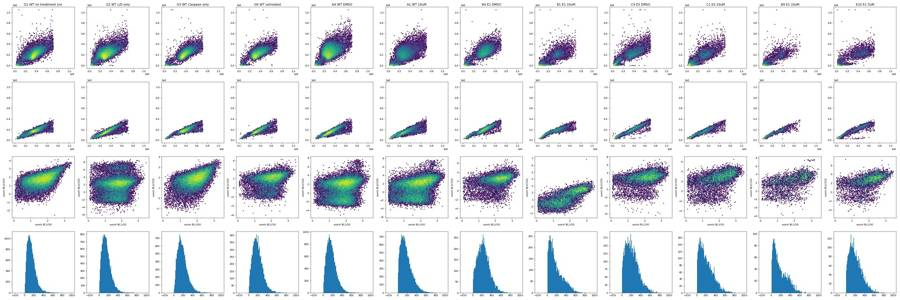
16
thinking
Overview plots are done, and two early oddities stand out: the BL1 caspase channel never tops about 830, and BL2 (SYTOX) shows odd negative clusters. I'm checking the raw distributions next.
17
tool call · Bash
cd /task/work; cat > look2.py <<'EOF'
import flowkit as fk, pandas as pd, numpy as np
lay=pd.read_csv('/task/inputs/plate_layout.csv').set_index('well')
def load(w):
s=fk.Sample('/task/inputs/raw/'+lay.loc[w,'file'])
d=s.as_dataframe(source='raw'); d.columns=s.pnn_labels; return d
for w in ['G1','G2','G3','A4','A1','B1','C4']:
d=load(w)
print(w, lay.loc[w,'sample'])
print(d.describe(percentiles=[.001,.01,.05,.5,.95,.99,.999]).T.round(1).to_string())
EOF
python3 look2.py 2>&1 | head -12018
tool output
G1 WT no treatment (no stain)
count mean std min 0.1% 1% 5% 50% 95% 99% 99.9% max
Time 34073.0 8.2 4.5 0.0 0.0 0.2 1.0 8.3 15.7 16.3 16.6 16.7
FSC-A 34073.0 351839.2 108125.8 20992.0 25132.5 33206.9 111372.6 353726.0 516821.2 649459.7 701043.3 710099.0
SSC-A 34073.0 206791.9 84650.9 -63578.0 1064.6 3381.6 48573.4 201166.0 344109.0 453166.8 621557.0 1048575.0
BL1-A 34073.0 147.0 89.5 4.0 6.0 18.0 36.0 131.0 313.0 437.0 604.8 773.0
BL2-A 34073.0 475.8 352.1 -940.0 -147.9 -51.0 62.0 406.0 1122.0 1782.0 2657.1 4715.0
FSC-H 34073.0 172406.4 46847.8 25034.0 25603.4 31342.4 73343.6 174051.0 247470.2 294751.6 340323.3 414202.0
SSC-H 34073.0 119411.4 42636.0 0.0 1824.1 3426.8 36601.6 118432.0 184657.8 235309.3 312788.6 947353.0
BL1-H 34073.0 116.9 45.7 21.0 34.0 48.0 61.0 109.0 199.0 276.0 386.0 570.0
BL2-H 34073.0 322.0 203.4 2.0 27.1 60.0 105.0 274.0 704.4 1116.6 1647.0 2473.0
FSC-W 34073.0 146.1 22.3 40.0 49.1 66.0 102.0 150.0 168.0 199.3 282.0 322.0
SSC-W 34073.0 128.4 23.2 0.0 21.0 33.0 94.0 130.0 153.0 183.0 268.0 322.0
BL1-W 34073.0 0.0 0.0 0.0 0.0 0.0 0.0 0.0 0.0 0.0 0.0 0.0
BL2-W 34073.0 0.3 2.4 0.0 0.0 0.0 0.0 0.0 0.0 13.0 32.0 60.0
G2 WT L/D only
count mean std min 0.1% 1% 5% 50% 95% 99% 99.9% max
Time 28006.0 8.0 4.2 0.0 0.0 0.2 1.0 8.1 15.0 15.5 15.8 15.9
FSC-A 28006.0 300524.9 108826.8 17677.0 24858.0 35598.2 116938.5 291545.0 494066.0 623888.9 694784.8 712910.0
SSC-A 28006.0 220603.1 89518.0 -65536.0 1352.6 4465.0 97904.0 211294.5 374188.2 493307.3 679623.0 1048575.0
BL1-A 28006.0 154.7 94.1 4.0 6.0 16.0 33.0 140.0 329.0 449.0 611.0 826.0
BL2-A 28006.0 6543.4 23382.6 -34357.0 -8054.0 -1169.0 -590.0 640.0 46290.8 116359.4 250454.4 469842.0
FSC-H 28006.0 152479.8 53047.0 25181.0 25657.1 31999.8 65983.8 148003.0 247553.2 300565.9 354403.4 396198.0
SSC-H 28006.0 123964.0 41966.9 0.0 2106.0 4348.6 63319.5 122162.0 189881.8 235073.7 325503.5 1048575.0
BL1-H 28006.0 121.5 45.9 20.0 35.0 49.0 64.0 114.0 203.0 276.0 383.0 724.0
BL2-H 28006.0 3829.0 11676.0 0.0 0.0 208.0 359.0 745.0 27112.2 61312.9 105900.3 197842.0
FSC-W 28006.0 129.6 23.0 42.0 50.0 66.0 98.0 127.0 159.0 213.0 282.0 375.0
SSC-W 28006.0 128.7 22.8 0.0 24.0 37.0 109.0 128.0 152.0 219.0 280.0 353.0
BL1-W 28006.0 0.0 0.0 0.0 0.0 0.0 0.0 0.0 0.0 0.0 0.0 0.0
BL2-W 28006.0 16.4 37.6 0.0 0.0 0.0 0.0 0.0 116.0 145.0 221.0 300.0
G3 WT Caspase only
count mean std min 0.1% 1% 5% 50% 95% 99% 99.9% max
Time 27095.0 8.4 4.5 0.0 0.0 0.2 1.0 8.6 15.7 16.3 16.6 16.8
FSC-A 27095.0 362174.0 109018.6 15526.0 24920.9 31856.5 87975.4 360762.0 528938.6 650545.0 701544.9 710871.0
SSC-A 27095.0 202750.1 82094.9 -2373.0 971.6 2727.6 18032.8 199627.0 333636.0 424055.1 543826.0 1048575.0
BL1-A 27095.0 183.0 103.7 4.0 7.0 23.0 46.0 167.0 379.0 500.0 646.0 769.0
BL2-A 27095.0 523.5 352.0 -371.0 -171.7 -57.1 74.0 465.0 1177.0 1735.1 2507.8 3208.0
FSC-H 27095.0 180598.1 47224.6 25211.0 25563.7 30487.8 75077.5 178683.0 256759.7 300290.2 345559.0 379555.0
SSC-H 27095.0 117489.4 42724.6 203.0 1745.2 2845.0 15296.4 117654.0 180558.0 225735.0 296829.5 1048575.0
BL1-H 27095.0 135.7 53.0 21.0 37.1 51.0 69.0 127.0 234.0 312.0 425.4 577.0
BL2-H 27095.0 352.8 199.9 0.0 30.0 75.0 126.0 310.0 731.0 1082.1 1559.8 2208.0
FSC-W 27095.0 146.5 22.2 37.0 49.0 64.0 98.0 151.0 167.0 190.0 280.0 313.0
SSC-W 27095.0 126.8 24.5 0.0 20.0 29.0 60.0 130.0 150.0 171.0 262.0 300.0
BL1-W 27095.0 0.0 0.0 0.0 0.0 0.0 0.0 0.0 0.0 0.0 0.0 0.0
BL2-W 27095.0 0.2 2.1 0.0 0.0 0.0 0.0 0.0 0.0 11.0 28.0 48.0
A4 WT DMSO
count mean std min 0.1% 1% 5% 50% 95% 99% 99.9% max
Time 34861.0 8.4 4.5 0.0 0.0 0.3 1.1 8.8 15.6 16.6 16.7 16.7
FSC-A 34861.0 290685.2 107173.0 22249.0 25174.7 32332.0 97666.0 283227.0 481317.0 608852.2 692124.9 710472.0
SSC-A 34861.0 243961.7 103343.7 -17393.0 1496.1 4141.8 45660.0 236689.0 414153.0 534393.0 726691.9 1048575.0
BL1-A 34861.0 173.9 101.2 4.0 8.0 18.0 39.0 159.0 364.0 474.0 641.3 797.0
BL2-A 34861.0 1083.6 5970.4 -12278.0 -2171.3 -1226.4 -735.0 403.0 2907.0 12930.4 96719.0 164281.0
FSC-H 34861.0 145898.0 52083.4 25163
… [6,063 more characters not shown]20
tool call · Bash
cd /task/work; cat > look3.py <<'EOF'
import flowkit as fk, pandas as pd, numpy as np, matplotlib
matplotlib.use('Agg'); import matplotlib.pyplot as plt
lay=pd.read_csv('/task/inputs/plate_layout.csv').set_index('well')
def load(w):
s=fk.Sample('/task/inputs/raw/'+lay.loc[w,'file'])
d=s.as_dataframe(source='raw'); d.columns=s.pnn_labels; return d
wells=['G1','G2','A4','A12','B1','B4','C4','B9']
fig,ax=plt.subplots(4,len(wells),figsize=(4*len(wells),16))
a=lambda x,c=150: np.arcsinh(x/c)
for i,w in enumerate(wells):
d=load(w)
ax[0,i].hexbin(a(d['BL2-H']),a(d['BL2-A']),gridsize=100,bins='log'); ax[0,i].set_title(w+' BL2H vs BL2A');
ax[1,i].hexbin(d['FSC-A'],a(d['BL2-A']),gridsize=100,bins='log'); ax[1,i].set_title('FSC-A vs BL2A')
ax[2,i].hexbin(d['SSC-A'],a(d['BL2-A']),gridsize=100,bins='log'); ax[2,i].set_title('SSC-A vs BL2A')
ax[3,i].hexbin(d['FSC-A'],d['BL1-A'],gridsize=100,bins='log'); ax[3,i].set_title('FSC-A vs BL1A')
plt.tight_layout(); plt.savefig('look3.png',dpi=40)
EOF
python3 look3.py21
tool output
(Bash completed with no output)
22
tool call · Read
{
"file_path": "/task/work/look3.png"
}23
tool output
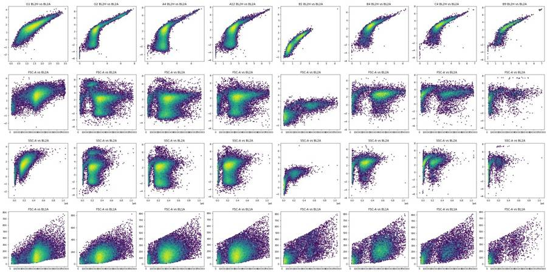
25
tool call · Bash
cd /task/work; cat > look4.py <<'EOF'
import flowkit as fk, pandas as pd, numpy as np, matplotlib
matplotlib.use('Agg'); import matplotlib.pyplot as plt
lay=pd.read_csv('/task/inputs/plate_layout.csv')
fig,axs=plt.subplots(7,12,figsize=(36,18)); axs=axs.ravel()
rows=[]
for i,r in lay.iterrows():
s=fk.Sample('/task/inputs/raw/'+r.file)
d=s.as_dataframe(source='raw'); d.columns=s.pnn_labels
t=d['Time'].values
bins=np.arange(0,17.5,0.5)
h,_=np.histogram(t,bins)
ax=axs[i]; ax.plot(bins[:-1],h); ax.set_title(r.well,fontsize=8)
ax2=ax.twinx();
# rolling median FSC
idx=np.digitize(t,bins)
med=[np.median(d['FSC-A'].values[idx==k]) if (idx==k).sum()>10 else np.nan for k in range(1,len(bins))]
ax2.plot(bins[:-1],med,'r'); ax2.set_ylim(0,6e5)
h2=h[1:-2] # trim ends
rows.append(dict(well=r.well,n=len(d),tmax=t.max(),cv_rate=h2.std()/h2.mean(),minbin=h2.min(),maxbin=h2.max(),first2=h[:4].sum(),last2=h[-5:-1].sum(),monotonic=np.corrcoef(np.arange(len(h2)),h2)[0,1]))
plt.tight_layout(); plt.savefig('time.png',dpi=35)
df=pd.DataFrame(rows); pd.set_option('display.width',200); print(df.round(3).to_string())
EOF
python3 look4.py26
tool output
well n tmax cv_rate minbin maxbin first2 last2 monotonic 0 A1 30920 16.721 0.148 652 1240 3253 2814 -0.010 1 A2 31266 16.571 0.185 570 1291 3739 2142 -0.367 2 A3 38748 16.778 0.121 934 1461 4159 3821 0.015 3 A4 34861 16.734 0.203 702 1523 3342 3058 0.088 4 A5 14011 16.581 0.153 301 593 1597 1221 -0.146 5 A6 25118 16.726 0.150 563 1012 2589 2471 -0.008 6 A7 27544 16.495 0.102 622 1041 3156 3181 -0.008 7 A8 30067 15.853 0.206 686 1345 3423 2176 -0.121 8 A9 17224 16.515 0.137 373 659 2083 1482 -0.374 9 A10 24604 16.639 0.147 558 961 2612 2436 -0.129 10 A11 38346 16.331 0.176 837 1735 4117 3454 -0.251 11 A12 31708 16.608 0.162 728 1333 3731 2753 -0.270 12 B1 9849 16.792 0.101 237 360 1070 1059 -0.062 13 B2 10963 16.731 0.104 272 400 1328 1096 -0.096 14 B3 14921 16.753 0.098 384 536 1699 1522 -0.148 15 B4 12172 16.570 0.177 272 555 1317 1119 -0.101 16 B5 5068 16.550 0.121 121 198 569 485 -0.091 17 B6 9638 16.830 0.124 231 379 1067 966 -0.096 18 B7 13360 16.719 0.117 336 529 1509 1284 -0.148 19 B8 11210 16.671 0.180 256 487 1196 942 -0.153 20 B9 3505 16.823 0.139 84 140 397 318 -0.079 21 B10 8268 16.540 0.151 157 336 984 726 -0.216 22 B11 10609 16.705 0.126 262 398 1113 1150 0.016 23 B12 9382 16.354 0.243 79 432 1029 652 -0.242 24 C1 7495 16.445 0.176 97 309 875 568 -0.296 25 C2 10263 16.756 0.172 188 429 1152 854 -0.230 26 C3 8563 16.210 0.249 50 431 1010 565 -0.450 27 C4 9241 16.738 0.171 203 367 827 960 0.202 28 C5 3151 15.847 0.145 65 128 338 263 0.011 29 C6 6099 16.406 0.204 51 266 714 479 -0.300 30 C7 8001 15.962 0.173 149 345 921 625 -0.225 31 C8 8215 16.038 0.249 18 368 860 513 -0.230 32 C9 4067 16.742 0.147 84 155 430 453 0.025 33 C10 8011 16.063 0.251 26 349 846 432 -0.257 34 C11 9008 15.913 0.189 149 383 1017 675 -0.107 35 C12 13163 16.730 0.229 85 577 1527 944 -0.228 36 D1 22778 16.576 0.216 121 1034 2319 1551 -0.185 37 D2 27593 16.720 0.165 603 1117 2558 2812 0.152 38 D3 27824 16.714 0.130 669 1053 2880 3105 0.046 39 D4 24551 16.284 0.209 525 1061 2072 2406 0.100 40 D5 6454 16.346 0.245 27 294 643 395 -0.212 41 D6 17066 16.372 0.223 84 708 1901 982 -0.263 42 D7 23253 16.449 0.212 104 972 2640 1434 -0.288 43 D8 23299 16.660 0.211 494 996 2094 2451 0.216 44 D9 8616 15.873 0.173 163 365 964 593 -0.158 45 D10 19657 15.928 0.163 419 817 2214 1437 0.009 46 D11 31867 16.691 0.150 747 1277 3375 3186 0.182 47 D12 25256 16.702 0.176 577 1046 2594 2701 -0.000 48 E1 9821 16.765 0.087 256 357 1097 1112 0.089 49 E2 10681 16.762 0.108 268 401 1195 1199 -0.088 50 E3 12311 16.697 0.106 295 463 1389 1352 -0.261 51 E4 10059 16.771 0.221 210 428 882 986 0.333 52 E5 4437 16.629 0.121 108 173 503 491 -0.015 53 E6 7547 16.611 0.112 192 293 850 819 0.048 54 E7 12028 15.928 0.140 316 481 1324 1003 0.147 55 E8 7979 16.644 0.182 175 366 872 748 -0.056 56 E9 4147 16.501 0.105 94 159 566 437 -0.270 57 E10 5492 16.508 0.235 15 237 272 666 0.409 58 E11 11711 15.912 0.125 278 464 1353 873 -0.115 59 E12 10755 15.860 0.215 209 493 1291 719 -0.328 60 F1 6393 16.710 0.135 143 241 671 684 0.035 61 F2 9910 16.619 0.150 237 410 978 987 0.247 62 F3 9940 15.886 0.193 243 466 1019 797 0.083 63 F4 10729 16.326 0.249 32 548 1162 700 -0.337 64 F5 3184 16.301 0.205 55 138 338 286 -0.089 65 F6 6320 16.815 0.180 134 289 631 694 0.123 66 F7 9381 16.684 0.149 219 383 991 1012 0.114 67 F8 10605 16.653 0.197 162 475 1227 824 -0.200 68 F9 3608 15.814 0.180 53 167 418 263 -0.303 69 F10 8439 16.746 0.158 187 337 961 912 -0.034 70 F11 12193 16.716 0.149 277 483 1352 1309 -0.013 71 F12 11679 16.118 0.301 19 607 1384 494 -0.420 72 G1 34073 16.666 0.183 692 1392 3696 3489 -0.162 73 G2 28006 15.946 0.228 368 1241 2924 2127 -0.088 74 G3 27095 16.755 0.206 595 1214 2630 2917 0.126 75 G4 7482 15.918 0.243 136 356 753 657 0.012 76 G5 11594 16.605 0.204 275 526 1185 1183 0.254 77 G6 16054 16.439 0.265 17 740 1837 925 -0.339
27
tool call · Read
{
"file_path": "/task/work/time.png"
}28
tool output
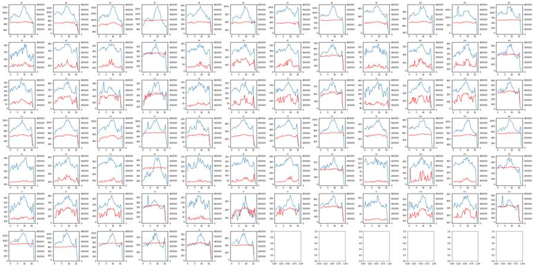
30
tool call · Bash
cd /task/work; cat > look5.py <<'EOF'
import flowkit as fk, pandas as pd, numpy as np
lay=pd.read_csv('/task/inputs/plate_layout.csv')
rows=[]
for i,r in lay.iterrows():
s=fk.Sample('/task/inputs/raw/'+r.file)
d=s.as_dataframe(source='raw'); d.columns=s.pnn_labels
cell=(d['FSC-A']>100000)
rows.append(dict(well=r.well,n=len(d),fsc_ceiling_pct=(d['FSC-A']>695000).mean()*100,ssc_sat_pct=(d['SSC-A']>=1048575).mean()*100,
fscmax=d['FSC-A'].max(),
debris_pct=(d['FSC-A']<100000).mean()*100,
bl2h_med_cells=np.median(d.loc[cell,'BL2-H']), bl2a_neg_pct=(d.loc[cell,'BL2-A']<-300).mean()*100,
bl2h_gt5k=(d.loc[cell,'BL2-H']>5000).mean()*100, bl2a_gt5k=(d.loc[cell,'BL2-A']>5000).mean()*100,
bl1_med=np.median(d.loc[cell,'BL1-A']), bl1_p99=np.percentile(d.loc[cell,'BL1-A'],99),ratio=np.median(d.loc[cell,'BL1-A']/d.loc[cell,'FSC-A'])*1e3))
df=pd.DataFrame(rows); pd.set_option('display.width',250); print(df.round(3).to_string())
df.to_csv('qc2.csv',index=False)
EOF
python3 look5.py31
tool output
well n fsc_ceiling_pct ssc_sat_pct fscmax debris_pct bl2h_med_cells bl2a_neg_pct bl2h_gt5k bl2a_gt5k bl1_med bl1_p99 ratio 0 A1 30920 0.126 0.000 707042.0 25.129 741.0 12.860 1.728 3.715 183.0 564.51 0.641 1 A2 31266 0.086 0.000 706370.0 27.656 724.0 13.215 1.640 3.143 180.0 535.82 0.662 2 A3 38748 0.044 0.000 705341.0 33.880 705.0 12.479 1.226 2.463 181.0 539.00 0.666 3 A4 34861 0.089 0.003 710472.0 5.040 732.0 15.947 1.323 2.447 163.0 479.00 0.549 4 A5 14011 0.007 0.007 698538.0 26.572 730.0 10.993 3.567 6.299 196.0 555.00 0.687 5 A6 25118 0.032 0.004 704259.0 26.081 712.0 10.637 1.594 3.808 180.0 542.00 0.656 6 A7 27544 0.040 0.000 703561.0 29.683 720.0 10.615 1.291 3.201 182.0 529.33 0.663 7 A8 30067 0.103 0.007 709534.0 5.900 724.0 13.434 1.195 2.492 164.0 485.00 0.547 8 A9 17224 0.070 0.012 708799.0 28.693 746.0 10.617 1.221 4.014 211.0 557.00 0.740 9 A10 24604 0.098 0.000 709434.0 24.240 746.0 9.410 1.309 3.686 192.0 547.00 0.674 10 A11 38346 0.083 0.005 708280.0 28.676 727.0 10.325 1.009 3.104 188.0 545.00 0.652 11 A12 31708 0.139 0.006 710978.0 5.891 723.0 10.670 1.290 3.519 167.0 496.00 0.538 12 B1 9849 0.112 0.020 705050.0 42.248 409.0 0.000 0.018 0.018 235.0 635.00 0.806 13 B2 10963 0.082 0.009 703393.0 46.365 706.0 3.912 1.276 4.694 244.0 605.42 0.798 14 B3 14921 0.087 0.000 704964.0 45.325 614.0 1.679 0.392 2.501 240.0 601.00 0.756 15 B4 12172 0.156 0.016 705244.0 13.301 674.0 2.615 0.673 2.824 242.0 592.48 0.615 16 B5 5068 0.079 0.000 701214.0 45.245 817.0 3.928 4.649 10.739 253.0 592.26 0.927 17 B6 9638 0.062 0.010 709825.0 37.124 777.0 3.581 2.112 5.809 239.0 594.41 0.785 18 B7 13360 0.052 0.015 707396.0 43.608 775.5 3.743 1.394 5.177 238.0 581.34 0.778 19 B8 11210 0.152 0.009 705739.0 17.788 864.0 4.579 2.398 7.617 234.0 579.00 0.654 20 B9 3505 0.171 0.029 704489.0 48.502 1026.0 3.934 5.817 13.961 274.0 618.88 0.990 21 B10 8268 0.048 0.000 704971.0 42.695 838.0 3.440 2.343 7.070 258.0 620.00 0.803 22 B11 10609 0.075 0.009 704738.0 42.521 794.0 3.542 1.312 6.018 248.0 609.00 0.773 23 B12 9382 0.224 0.011 707410.0 13.824 809.0 3.587 1.558 5.331 253.0 615.16 0.669 24 C1 7495 0.227 0.027 707054.0 39.466 949.0 4.232 2.314 10.932 246.0 655.20 0.822 25 C2 10263 0.146 0.019 708109.0 36.666 890.0 4.262 2.754 8.831 237.0 631.00 0.717 26 C3 8563 0.257 0.023 705618.0 34.894 917.0 3.067 2.332 8.628 239.0 632.00 0.681 27 C4 9241 0.303 0.054 706042.0 29.899 968.0 3.288 4.847 13.260 242.0 635.00 0.647 28 C5 3151 0.063 0.000 698763.0 47.477 1349.0 3.444 9.486 23.746 258.0 638.00 0.973 29 C6 6099 0.213 0.016 708278.0 41.630 965.0 2.584 4.270 12.584 250.0 630.00 0.769 30 C7 8001 0.312 0.025 708192.0 37.745 889.0 1.887 2.871 9.356 251.0 662.20 0.716 31 C8 8215 0.450 0.024 707925.0 24.601 946.0 2.583 5.538 13.836 241.0 650.07 0.627 32 C9 4067 0.221 0.000 706074.0 44.898 1188.0 3.079 6.292 19.411 264.0 648.00 0.876 33 C10 8011 0.312 0.000 712231.0 37.673 996.0 2.884 4.386 13.138 257.0 649.08 0.740 34 C11 9008 0.255 0.033 705477.0 34.913 824.0 1.979 1.654 7.471 252.0 641.14 0.685 35 C12 13163 0.304 0.023 708485.0 18.035 870.0 2.929 2.716 8.972 239.0 645.00 0.602 36 D1 22778 0.127 0.000 706571.0 29.476 742.0 8.790 0.753 3.660 202.0 563.00 0.656 37 D2 27593 0.087 0.004 709330.0 29.312 700.0 10.254 0.492 2.317 194.0 527.00 0.660 38 D3 27824 0.083 0.000 706304.0 36.055 713.0 8.448 1.057 2.883 203.0 536.00 0.701 39 D4 24551 0.118 0.008 709510.0 5.613 695.0 10.404 1.321 3.353 184.0 513.00 0.567 40 D5 6454 0.093 0.000 705131.0 23.846 731.0 7.569 … [5,375 more characters not shown]
33
thinking
QC passed: acquisition was stable in every well, but well B1 seems to have missed the SYTOX stain (BL2-H median 409 versus roughly 700–1000 elsewhere). I'm drawing the gates next.
34
tool call · Bash
cd /task/work; cat > look6.py <<'EOF'
import flowkit as fk, pandas as pd, numpy as np, matplotlib
matplotlib.use('Agg'); import matplotlib.pyplot as plt
lay=pd.read_csv('/task/inputs/plate_layout.csv').set_index('well')
def load(w):
s=fk.Sample('/task/inputs/raw/'+lay.loc[w,'file'])
d=s.as_dataframe(source='raw'); d.columns=s.pnn_labels; return d
groups={'WT_DMSO':['A4','A8','A12','D4','D8','D12'],'WT_10uM':['A1','A5','A9','D1','D5','D9'],'KO_DMSO':['B4','B8','B12','C4','C8','C12','E4','E8','E12','F4','F8','F12'],'KO_10uM':['B1','B5','B9','C1','C5','C9','E1','E5','E9','F1','F5','F9'],'G1':['G1'],'G2':['G2']}
fig,ax=plt.subplots(2,len(groups),figsize=(6*len(groups),12))
for i,(g,ws) in enumerate(groups.items()):
d=pd.concat([load(w) for w in ws])
ax[0,i].hexbin(d['FSC-A'],d['SSC-A'],gridsize=150,bins='log',extent=(0,7.2e5,0,7e5)); ax[0,i].set_title(g)
ax[0,i].set_xticks(np.arange(0,7.2e5,5e4),minor=True); ax[0,i].grid(True,which='both',alpha=.3)
ax[1,i].hexbin(d['FSC-A'],d['FSC-H'],gridsize=150,bins='log',extent=(0,7.2e5,0,4.5e5)); ax[1,i].grid(True,alpha=.3)
plt.tight_layout(); plt.savefig('look6.png',dpi=40)
EOF
python3 look6.py35
tool output
(Bash completed with no output)
36
tool call · Read
{
"file_path": "/task/work/look6.png"
}37
tool output
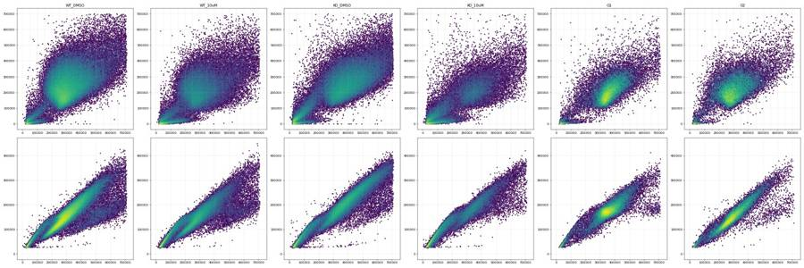
39
tool call · Bash
cd /task/work; cat > look7.py <<'EOF'
import flowkit as fk, pandas as pd, numpy as np, matplotlib
matplotlib.use('Agg'); import matplotlib.pyplot as plt
lay=pd.read_csv('/task/inputs/plate_layout.csv').set_index('well')
def load(w):
s=fk.Sample('/task/inputs/raw/'+lay.loc[w,'file'])
d=s.as_dataframe(source='raw'); d.columns=s.pnn_labels; return d
groups={'WT_DMSO':['A4','A8','A12','D4','D8','D12'],'WT_10uM':['A1','A5','A9','D1','D5','D9'],'KO_DMSO':['B4','B8','B12','C4','C8','C12','E4','E8','E12','F4','F8','F12'],'KO_10uM':['B1','B5','B9','C1','C5','C9','E1','E5','E9','F1','F5','F9'],'G1':['G1'],'G2':['G2']}
fig,ax=plt.subplots(3,len(groups),figsize=(6*len(groups),18))
for i,(g,ws) in enumerate(groups.items()):
d=pd.concat([load(w) for w in ws])
ax[0,i].hist(np.log10(d['FSC-A'].clip(1e3)),bins=200); ax[0,i].set_title(g+' log10 FSC-A')
ax[1,i].hexbin(np.log10(d['FSC-A'].clip(1e4)),np.log10(d['SSC-A'].clip(1e2)),gridsize=150,bins='log'); ax[1,i].grid(True,alpha=.3)
c=d[d['FSC-A']>100000]
ax[2,i].hexbin(c['FSC-A'],c['FSC-H']/c['FSC-A'],gridsize=150,bins='log',extent=(1e5,7.2e5,0.2,1)); ax[2,i].grid(True,alpha=.3)
plt.tight_layout(); plt.savefig('look7.png',dpi=40)
EOF
python3 look7.py40
tool output
(Bash completed with no output)
41
tool call · Read
{
"file_path": "/task/work/look7.png"
}42
tool output
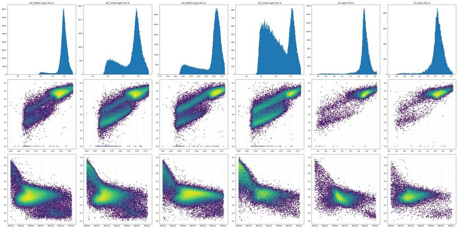
44
tool call · Bash
cd /task/work; cat > look8.py <<'EOF'
import flowkit as fk, pandas as pd, numpy as np, matplotlib
matplotlib.use('Agg'); import matplotlib.pyplot as plt
from matplotlib.path import Path
lay=pd.read_csv('/task/inputs/plate_layout.csv').set_index('well')
def load(w):
s=fk.Sample('/task/inputs/raw/'+lay.loc[w,'file'])
d=s.as_dataframe(source='raw'); d.columns=s.pnn_labels; return d
cellpoly=Path([(130000,40000),(700000,80000),(700000,1000000),(130000,1000000)])
singpoly=Path([(130000,130000*0.42),(700000,700000*0.40),(700000,700000*0.80),(130000,130000*0.98)])
def cs(d):
m=cellpoly.contains_points(d[['FSC-A','SSC-A']].values)&singpoly.contains_points(d[['FSC-A','FSC-H']].values)
return d[m]
wells=['G1','G2','G3','G6','G4','G5','A12','A9','D9','B12','B9','C12','C9','B1','B3']
fig,ax=plt.subplots(3,len(wells),figsize=(4*len(wells),12))
for i,w in enumerate(wells):
d=cs(load(w))
ax[0,i].hist(np.log10(d['BL2-H'].clip(10)),bins=150,range=(1,6),log=True); ax[0,i].set_title(w+' '+lay.loc[w,'sample'][:14]+' log BL2-H',fontsize=9)
ax[1,i].hist(np.arcsinh(d['BL2-A']/200),bins=150,range=(-6,9),log=True); ax[1,i].set_title('asinh BL2-A/200')
l=d[d['BL2-H']<3000]
ax[2,i].hexbin(l['FSC-A'],l['BL1-A'],gridsize=60,bins='log',extent=(1.3e5,7e5,0,850)); ax[2,i].set_title('live: FSC-A vs BL1-A')
plt.tight_layout(); plt.savefig('look8.png',dpi=40)
EOF
python3 look8.py45
tool output
(Bash completed with no output)
46
tool call · Read
{
"file_path": "/task/work/look8.png"
}47
tool output
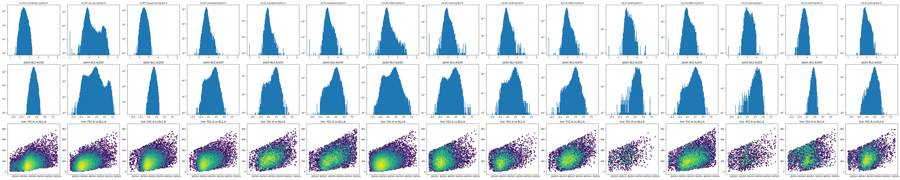
49
thinking
Gates are drafted; I'm now setting the dead-cell and caspase cutoffs from the control wells.
50
tool call · Bash
cd /task/work; cat > look9.py <<'EOF'
import flowkit as fk, pandas as pd, numpy as np, matplotlib
matplotlib.use('Agg'); import matplotlib.pyplot as plt
from matplotlib.path import Path
lay=pd.read_csv('/task/inputs/plate_layout.csv').set_index('well')
def load(w):
s=fk.Sample('/task/inputs/raw/'+lay.loc[w,'file'])
d=s.as_dataframe(source='raw'); d.columns=s.pnn_labels; return d
cellpoly=Path([(130000,40000),(700000,80000),(700000,1000000),(130000,1000000)])
singpoly=Path([(130000,130000*0.42),(700000,700000*0.40),(700000,700000*0.80),(130000,130000*0.98)])
def cs(d):
m=cellpoly.contains_points(d[['FSC-A','SSC-A']].values)&singpoly.contains_points(d[['FSC-A','FSC-H']].values)
return d[m]
wells=['G1','G2','A12','C5','B1','B3']
fig,ax=plt.subplots(2,len(wells),figsize=(5*len(wells),9))
for i,w in enumerate(wells):
d=cs(load(w))
ax[0,i].hist(np.log10(d['BL2-H'].clip(10)),bins=120,range=(1.5,5.5),log=True); ax[0,i].set_title(w+' '+lay.loc[w,'sample'][:14]+' log BL2-H'); ax[0,i].grid(alpha=.4)
ax[1,i].hexbin(np.log10(d['BL2-H'].clip(10)),np.arcsinh(d['BL1-A']/50),gridsize=80,bins='log',extent=(1.5,5.5,0,3.6)); ax[1,i].grid(alpha=.4); ax[1,i].set_xlabel('log BL2-H'); ax[1,i].set_ylabel('asinh BL1-A/50')
plt.tight_layout(); plt.savefig('look9.png',dpi=50)
for w in ['G1','G2','G3','G6','A12','B12']:
d=cs(load(w)); print(w, len(d), [round(np.percentile(d['BL2-H'],q)) for q in [50,90,95,99,99.9]], 'BL2-A',[round(np.percentile(d['BL2-A'],q)) for q in [50,99,99.9]])
EOF
python3 look9.py51
tool output
G1 30207 [281, 565, 709, 1122, 1647] BL2-A [414, 1753, 2543] G2 25285 [733, 2352, 18169, 53601, 88239] BL2-A [595, 93631, 172293] G3 24344 [318, 604, 743, 1092, 1566] BL2-A [480, 1736, 2503] G6 14544 [581, 905, 1086, 2294, 5946] BL2-A [582, 4370, 11753] A12 27670 [708, 1180, 1554, 5457, 45016] BL2-A [544, 11089, 65472] B12 7553 [799, 1517, 2438, 5677, 16180] BL2-A [1076, 11131, 34024]
52
tool call · Read
{
"file_path": "/task/work/look9.png"
}53
tool output
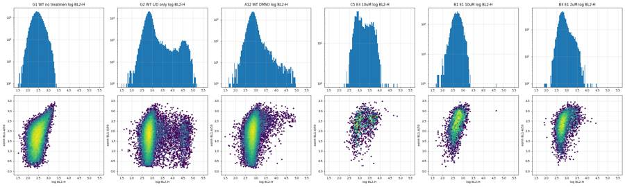
55
tool call · Bash
cd /task/work; cat > look10.py <<'EOF'
import flowkit as fk, pandas as pd, numpy as np
from matplotlib.path import Path
lay=pd.read_csv('/task/inputs/plate_layout.csv').set_index('well')
def load(w):
s=fk.Sample('/task/inputs/raw/'+lay.loc[w,'file'])
d=s.as_dataframe(source='raw'); d.columns=s.pnn_labels; return d
cellpoly=Path([(130000,40000),(700000,80000),(700000,1000000),(130000,1000000)])
singpoly=Path([(130000,130000*0.42),(700000,700000*0.40),(700000,700000*0.80),(130000,130000*0.98)])
def lv(d):
m=cellpoly.contains_points(d[['FSC-A','SSC-A']].values)&singpoly.contains_points(d[['FSC-A','FSC-H']].values)&(d['BL2-H']<2500)
return d[m]
g2=lv(load('G2'))
# quantile regression-ish: bin by FSC, get 99th pct
bins=np.arange(130000,700001,50000)
x=[];y=[]
for a,b in zip(bins[:-1],bins[1:]):
s=g2[(g2['FSC-A']>=a)&(g2['FSC-A']<b)]['BL1-A']
if len(s)>100: x.append((a+b)/2); y.append(np.percentile(s,99)); print(a,b,len(s),np.percentile(s,[50,95,99]))
p=np.polyfit(x,y,1); print('fit',p, np.polyval(p,[130000,700000]))
fixed=np.percentile(g2['BL1-A'],99); print('fixed 99th',fixed, 'G1 99th', np.percentile(lv(load('G1'))['BL1-A'],99))
EOF
python3 look10.py56
tool output
130000 180000 292 [115. 260.7 308.45] 180000 230000 1758 [114. 245. 290.43] 230000 280000 6211 [118. 262. 333.9] 280000 330000 6309 [134. 287. 366.] 330000 380000 3701 [161. 323. 408.] 380000 430000 2261 [177. 360. 450.8] 430000 480000 1172 [207. 398.35 500.58] 480000 530000 574 [222.5 493.7 577. ] 530000 580000 292 [263.5 535.45 639.44] 580000 630000 149 [287. 526.6 668.56] fit [8.90436364e-04 1.15950182e+02] [231.70690909 739.25563636] fixed 99th 441.0 G1 99th 436.0
58
tool call · Bash
cd /task/work; cat > build_gates.py <<'EOF'
import flowkit as fk, pandas as pd, numpy as np, sys
OUT='/task/outputs/'
lay=pd.read_csv('/task/inputs/plate_layout.csv')
U='uncompensated'
D=lambda ch,mn=None,mx=None: fk.Dimension(ch,compensation_ref=U,range_min=mn,range_max=mx)
g=fk.GatingStrategy()
# 1 Cells: exclude debris (FSC-A<130k), low-SSC debris stream, FSC-A ceiling (>700k) and SSC saturation
cells=fk.gates.PolygonGate('Cells',[D('FSC-A'),D('SSC-A')],[(130000,40000),(700000,80000),(700000,1000000),(130000,1000000)])
g.add_gate(cells,gate_path=('root',))
# 2 Singlets: FSC-H/FSC-A ratio between ~0.40-0.42 (lower) and 0.80-0.98 (upper)
sing=fk.gates.PolygonGate('Singlets',[D('FSC-A'),D('FSC-H')],[(130000,54600),(700000,280000),(700000,560000),(130000,127400)])
g.add_gate(sing,gate_path=('root','Cells'))
# 3 Live: SYTOX AAdvanced (BL2) height below 2500
live=fk.gates.RectangleGate('Live',[D('BL2-H',None,2500)])
g.add_gate(live,gate_path=('root','Cells','Singlets'))
dead=fk.gates.RectangleGate('Dead_SYTOXpos',[D('BL2-H',2500,None)])
g.add_gate(dead,gate_path=('root','Cells','Singlets'))
# 4 Caspase-3/7+: BL1-A above size-dependent line = 99th pct of BL1-A vs FSC-A in G2 (SYTOX-only FMO) live singlets
a,b=8.90436364e-04,1.15950182e+02
casp=fk.gates.PolygonGate('Casp37_pos',[D('FSC-A'),D('BL1-A')],[(130000,a*130000+b),(700000,a*700000+b),(700000,1048576),(130000,1048576)])
g.add_gate(casp,gate_path=('root','Cells','Singlets','Live'))
with open(OUT+'gates.xml','wb') as f: fk.export_gatingml(g,f)
g2=fk.parse_gating_xml(OUT+'gates.xml')
print(g2.get_gate_hierarchy(output='ascii'))
pops=[('Cells','cells','all_events'),('Singlets','singlets','Cells'),('Live','live','Singlets'),('Dead_SYTOXpos','other','Singlets'),('Casp37_pos','marker_positive','Live')]
rows=[]
for _,r in lay.iterrows():
s=fk.Sample('/task/inputs/raw/'+r.file)
res=g2.gate_sample(s)
n=s.event_count
cnt={'all_events':n}
rows.append(dict(file=r.file,well=r.well,population='all_events',role='other',parent='none',count=n,pct_of_parent=''))
for p,role,par in pops:
c=int(res.get_gate_count(p))
cnt[p]=c
pc=cnt[par]
rows.append(dict(file=r.file,well=r.well,population=p,role=role,parent=par,count=c,pct_of_parent=round(100*c/pc,4) if pc>0 else ''))
df=pd.DataFrame(rows)
df.to_csv(OUT+'counts.csv',index=False)
w=df.pivot(index='well',columns='population',values='count')
w=w.loc[lay.well]
w['live_pct']=100*w.Live/w.Singlets; w['casp_pct']=100*w.Casp37_pos/w.Live; w['dead_pct']=100*w.Dead_SYTOXpos/w.Singlets
w['cells_pct']=100*w.Cells/w.all_events
w.to_csv('wide.csv')
pd.set_option('display.width',200); pd.set_option('display.max_rows',200)
print(w.round(2).to_string())
EOF
python3 build_gates.py59
tool output
root
╰── Cells
╰── Singlets
├── Live
│ ╰── Casp37_pos
╰── Dead_SYTOXpos
population Casp37_pos Cells Dead_SYTOXpos Live Singlets all_events live_pct casp_pct dead_pct cells_pct
well
A1 1271 21015 667 18407 19074 30920 96.50 6.90 3.50 67.97
A2 1256 20498 594 18590 19184 31266 96.90 6.76 3.10 65.56
A3 1394 22360 557 20315 20872 38748 97.33 6.86 2.67 57.71
A4 997 32676 648 30257 30905 34861 97.90 3.30 2.10 93.73
A5 682 9519 631 8201 8832 14011 92.86 8.32 7.14 67.94
A6 959 16931 674 15162 15836 25118 95.74 6.33 4.26 67.41
A7 1027 17404 561 15742 16303 27544 96.56 6.52 3.44 63.19
A8 784 27874 640 25951 26591 30067 97.59 3.02 2.41 92.71
A9 1066 11120 498 9872 10370 17224 95.20 10.80 4.80 64.56
A10 1153 17273 626 15460 16086 24604 96.11 7.46 3.89 70.20
A11 1378 24968 741 22581 23322 38346 96.82 6.10 3.18 65.11
A12 747 29432 745 26925 27670 31708 97.31 2.77 2.69 92.82
B1 724 4129 1 3882 3883 9849 99.97 18.65 0.03 41.92
B2 465 4795 323 4271 4594 10963 92.97 10.89 7.03 43.74
B3 513 6291 262 5786 6048 14921 95.67 8.87 4.33 42.16
B4 390 10192 319 9487 9806 12172 96.75 4.11 3.25 83.73
B5 251 2259 359 1792 2151 5068 83.31 14.01 16.69 44.57
B6 448 5275 376 4657 5033 9638 92.53 9.62 7.47 54.73
B7 470 6299 418 5650 6068 13360 93.11 8.32 6.89 47.15
B8 368 8779 625 7878 8503 11210 92.65 4.67 7.35 78.31
B9 179 1427 306 1055 1361 3505 77.52 16.97 22.48 40.71
B10 368 3981 354 3463 3817 8268 90.73 10.63 9.27 48.15
B11 389 5065 369 4518 4887 10609 92.45 8.61 7.55 47.74
B12 398 7835 363 7190 7553 9382 95.19 5.54 4.81 83.51
C1 381 3697 458 3020 3478 7495 86.83 12.62 13.17 49.33
C2 347 5703 543 4993 5536 10263 90.19 6.95 9.81 55.57
C3 237 4995 451 4415 4866 8563 90.73 5.37 9.27 58.33
C4 264 6027 803 5103 5906 9241 86.40 5.17 13.60 65.22
C5 102 1317 399 861 1260 3151 68.33 11.85 31.67 41.80
C6 203 3035 425 2514 2939 6099 85.54 8.07 14.46 49.76
C7 221 4393 497 3768 4265 8001 88.35 5.87 11.65 54.91
C8 196 5818 778 4921 5699 8215 86.35 3.98 13.65 70.82
C9 150 1822 462 1274 1736 4067 73.39 11.77 26.61 44.80
C10 280 4329 570 3621 4191 8011 86.40 7.73 13.60 54.04
C11 304 5181 431 4603 5034 9008 91.44 6.60 8.56 57.52
C12 385 10375 875 9265 10140 13163 91.37 4.16 8.63 78.82
D1 735 14537 443 12832 13275 22778 96.66 5.73 3.34 63.82
D2 955 17928 363 16565 16928 27593 97.86 5.77 2.14 64.97
D3 870 16044 436 14806 15242 27824 97.14 5.88 2.86 57.66
D4 669 22935 669 21286 21955 24551 96.95 3.14 3.05 93.42
D5 266 4544 269 4003 4272 6454 93.70 6.65 6.30 70.41
D6 544 11042 388 10054 10442 17066 96.28 5.41 3.72 64.70
D7 784 14019 502 12916 13418 23253 96.26 6.07 3.74 60.29
D8 587 21581 1027 19344 20371 23299 94.96 3.03 5.04 92.63
D9 359 5822 282 5188 5470 8616 94.84 6.92 5.16 67.57
D10 706 13455 386 12337 12723 19657 96.97 5.72 3.03 68.45
D11 1126 20551 352 19261 19613 31867 98.21 5.85 1.79 64.49
D12 664 23161 619 21518 22137 25256 97.20 3.09 2.80 91.70
E1 299 2701 196 2405 2601 9821 92.46 12.43 7.54 27.50
E2 387 4749
… [3,301 more characters not shown]61
tool call · Bash
cd /task/work; cat > look11.py <<'EOF'
import flowkit as fk, pandas as pd, numpy as np, matplotlib
matplotlib.use('Agg'); import matplotlib.pyplot as plt
lay=pd.read_csv('/task/inputs/plate_layout.csv').set_index('well')
g=fk.parse_gating_xml('/task/outputs/gates.xml')
def live(w):
s=fk.Sample('/task/inputs/raw/'+lay.loc[w,'file'])
r=g.gate_sample(s); m=r.get_gate_membership('Live')
d=s.as_dataframe(source='raw'); d.columns=s.pnn_labels; return d[m]
sets={'controls':['G1','G3','G2','G6','G4','G5'],'WT CPT (no CM)':['A12','A11','A10','A9'],'E1 CPT (no CM)':['B12','B11','B10','B9'],'E3 CPT (no CM)':['C12','C11','C10','C9']}
fig,ax=plt.subplots(2,4,figsize=(24,10))
for i,(k,ws) in enumerate(sets.items()):
for w in ws:
d=live(w); r=np.log10(d['BL1-A'].clip(1)/d['FSC-A'])
ax[0,i].hist(r,bins=100,range=(-5,-2.7),histtype='step',density=True,label=w+' '+lay.loc[w,'sample'][:16])
ax[1,i].hist(np.log10(d['BL1-A'].clip(1)),bins=100,range=(0,3),histtype='step',density=True,label=w)
ax[0,i].legend(fontsize=8); ax[0,i].set_title(k+': log10(BL1-A/FSC-A), live singlets'); ax[1,i].set_title('log10 BL1-A')
plt.tight_layout(); plt.savefig('look11.png',dpi=50)
EOF
python3 look11.py62
tool output
(Bash completed with no output)
63
tool call · Read
{
"file_path": "/task/work/look11.png"
}64
tool output
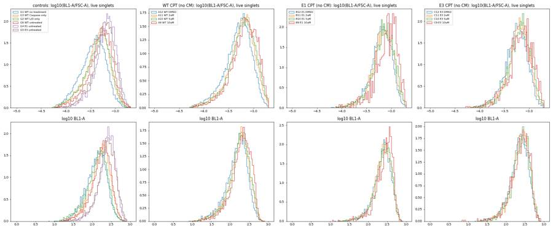
66
thinking
No well shows a distinct caspase-3/7-positive population; camptothecin only shifts the BL1 distribution slightly. I'm building the condition summaries and running sensitivity checks with alternative caspase gates next.
67
tool call · Bash
cd /task/work; cat > sens.py <<'EOF'
# sensitivity metrics (not used for counts.csv): fixed BL1 threshold and median size-normalised BL1 within Live gate
import flowkit as fk, pandas as pd, numpy as np
lay=pd.read_csv('/task/inputs/plate_layout.csv')
g=fk.parse_gating_xml('/task/outputs/gates.xml')
rows=[]
for _,r in lay.iterrows():
s=fk.Sample('/task/inputs/raw/'+r.file)
res=g.gate_sample(s); m=res.get_gate_membership('Live')
d=s.as_dataframe(source='raw'); d.columns=s.pnn_labels; l=d[m]
rows.append(dict(well=r.well,fixed441_pct=100*(l['BL1-A']>441).mean(),med_BL1=l['BL1-A'].median(),med_ratio_x1e3=1e3*np.median(l['BL1-A']/l['FSC-A']),med_FSC=l['FSC-A'].median(),order=_))
pd.DataFrame(rows).to_csv('sens.csv',index=False)
print(pd.DataFrame(rows).round(3).to_string())
EOF
python3 sens.py | head -568
tool output
well fixed441_pct med_BL1 med_ratio_x1e3 med_FSC order 0 A1 3.363 178.0 0.604 283236.0 0 1 A2 2.657 174.0 0.614 280986.0 1 2 A3 2.801 173.0 0.599 283184.0 2 3 A4 1.352 158.0 0.535 288244.0 3
70
tool call · Bash
cd /task/work; cat > analysis.py <<'EOF'
import pandas as pd, numpy as np
lay=pd.read_csv('/task/inputs/plate_layout.csv').set_index('well')
c=pd.read_csv('/task/outputs/counts.csv')
w=c.pivot(index='well',columns='population',values='count').loc[lay.index]
w['casp']=100*w.Casp37_pos/w.Live; w['dead']=100*w.Dead_SYTOXpos/w.Singlets
s=pd.read_csv('sens.csv').set_index('well'); w=w.join(s)
w=w.join(lay[['cell_line','camptothecin','conditioned_media']])
cmmap={'24hr conditioned media':'CM24h','48hr conditioned media':'CM48h','No conditioned media':'noCM'}
w['cm']=w.conditioned_media.map(cmmap); w['dose']=w.camptothecin
excl=['B1']
pd.set_option('display.width',250)
m=w.drop(excl)
m=m[m.cm.notna()]
for metric in ['casp','dead','fixed441_pct','med_ratio_x1e3','Live']:
t=m.groupby(['cell_line','dose','cm'])[metric].agg(['mean','std','count']).round(2)
print(metric); print(t.unstack('cm').to_string())
EOF
python3 analysis.py71
tool output
casp
mean std count
cm CM24h CM48h noCM CM24h CM48h noCM CM24h CM48h noCM
cell_line dose
E1 10uM 12.43 13.01 16.29 NaN 1.41 0.96 1 2 2
2uM 9.16 8.03 8.73 0.42 0.41 0.17 2 2 2
5uM 9.87 10.06 8.96 1.44 0.62 2.35 2 2 2
DMSO 4.85 5.07 5.54 1.04 0.56 0.01 2 2 2
E3 10uM 11.79 10.53 12.84 1.17 1.87 1.51 2 2 2
2uM 5.92 6.07 7.25 0.79 0.29 0.92 2 2 2
5uM 6.08 7.51 7.54 1.23 0.80 0.27 2 2 2
DMSO 4.69 4.84 4.37 0.68 1.21 0.30 2 2 2
WT 10uM 6.32 7.48 8.86 0.83 1.18 2.74 2 2 2
2uM 6.37 6.30 5.97 0.70 0.32 0.18 2 2 2
5uM 6.26 5.87 6.59 0.70 0.65 1.23 2 2 2
DMSO 3.22 3.03 2.93 0.11 0.01 0.22 2 2 2
dead
mean std count
cm CM24h CM48h noCM CM24h CM48h noCM CM24h CM48h noCM
cell_line dose
E1 10uM 7.54 16.97 21.86 NaN 0.40 0.89 1 2 2
2uM 5.03 6.89 6.43 0.99 0.00 1.58 2 2 2
5uM 6.34 7.52 9.32 0.97 0.07 0.07 2 2 2
DMSO 4.74 8.42 4.41 2.11 1.52 0.56 2 2 2
E3 10uM 11.52 22.16 18.49 2.33 13.45 11.48 2 2 2
2uM 8.20 8.36 7.49 1.50 4.66 1.52 2 2 2
5uM 7.75 10.53 9.88 2.90 5.56 5.26 2 2 2
DMSO 10.96 11.25 8.06 3.73 3.39 0.81 2 2 2
WT 10uM 3.42 6.72 4.98 0.11 0.60 0.25 2 2 2
2uM 2.76 3.59 2.49 0.14 0.21 0.98 2 2 2
5uM 2.62 3.99 3.46 0.67 0.38 0.61 2 2 2
DMSO 2.57 3.72 2.74 0.67 1.86 0.07 2 2 2
fixed441_pct
mean std count
cm CM24h CM48h noCM CM24h CM48h noCM CM24h CM48h noCM
cell_line dose
E1 10uM 9.69 7.65 11.50 NaN 0.31 1.29 1 2 2
2uM 8.20 5.44 9.16 0.31 0.39 0.94 2 2 2
5uM 7.92 6.04 11.24 1.21 0.30 2.34 2 2 2
DMSO 7.45 5.26 8.53 1.06 0.88 0.32 2 2 2
E3 10uM 11.29 10.24 13.02 0.01 0.79 2.09 2 2 2
2uM 10.06 11.12 11.40 2.05 0.98 1.47 2 2 2
5uM 9.23 10.64 10.81 0.08 2.12 0.99 2 2 2
DMSO 8.91 9.70 8.70 0.02 1.84 0.47 2 2 2
WT 10uM 3.26 3.47 3.80 0.15 0.11 1.03 2 2 2
2uM 2.84 2.55 2.67 0.05 0.05 0.19 2 2 2
5uM 2.52 2.56 3.05 0.19 0.10 0.13 2 2 2
DMSO 1.70 1.72 1.62 0.49 0.43 0.13 2 2 2
med_ratio_x1e3
mean std count
cm CM24h CM48h noCM CM24h CM48h noCM CM24h CM48h noCM
cell_line dose
E1 10uM 0.74 0.78 0.83 NaN 0.02 0.05 1 2 2
2uM 0.71 0.72 0.71 0.05 0.02 0.02 2 2 2
5uM 0.73 0.75 0.67 0.01 0.05 0.06 2 2 2
DMSO 0.63 0.64 0.65 0.05 0.03 0.01 2 2 2
E3 10uM 0.72 0.70 0.74 0.02 0.04 0.04 2 2 2
2uM 0.65 0.66 0.66 0.04 0.03 0.05 2 2 2
5uM 0.64 0.68 0.68 0.00 0.01 0.03 2 2 2
DMSO 0.58 0.60 0.58 0.00 0.04 0.03 2 2 2
WT 10uM 0.61 0.64 0.67 0.01 0.01 0.04 2 2 2
2uM 0.62 0.63 0.63 0.03 0.03 0.03 2 2 2
5uM 0.62 0.62 0.64 0.01 0.02 0.01 2 2 2
DMSO 0.54 0.54 0.54 0.01 0.01 0.02 2 2 2
Live
mean std count
cm CM24h CM48h noCM CM24h CM48h noCM CM24h CM48h noCM
cell_line dose
E1 10uM 2405.0 1495.5 995.0 NaN 419.31 84.85 1 2 2
2uM 5081.5 5054.0 4361.5 996.31 842.87 221.32 2 2 2
5uM 4321.0 3787.0 2786.0 70.71 1230.37 957.42 2 2 2
DMSO 8550.0 6565.5 7857.0 1325.12 1856.16 943.28 2 2 2
E3 10uM 2600.5 952.0 1151.0 593.26 128.69 173.95 2 2 2
2uM 4685.0 4356.5 5154.0 381.84 832.26 779.23 2 2 2
5uM 5068.5 2871.5 3822.5 106.77 505.58 284.96 2 2 2
DMSO 6227.5 5915.5 8573.5 1590.28 1406.44 977.93 2 2 2
WT 10uM 15619.5 6102.0 7530.0 3942.12 2968.43 3312.09 2 2 2
2uM 17560.5 14329.0 20921.0 3895.45 1998.28 2347.59 2 2 2
5uM 17577.5 12608.0 13898.5 1431.89 3611.90 2208.29 2 2 2
DMSO 25771.5 22647.5 24221.5 6343.45 4671.85 3823.33 2 2 273
tool call · Bash
cd /task/work; python3 -c "import statsmodels; print(statsmodels.__version__)" 2>&1; cat >> analysis.py <<'EOF'
# linear model: casp ~ line*dose + cm*KO (wells as units; plate-internal replicates only)
import itertools
from scipy import stats
d=m.copy(); d['KO']=(d.cell_line!='WT').astype(int)
X=pd.get_dummies(d[['cell_line','dose']].astype(str).agg('_'.join,axis=1),drop_first=False).astype(float)
for cm in ['CM24h','CM48h']:
X[cm]=(d.cm==cm).astype(float); X[cm+'xKO']=X[cm]*d.KO
y=d.casp.values
beta,res,rk,sv=np.linalg.lstsq(X.values,y,rcond=None)
resid=y-X.values@beta; dof=len(y)-rk; s2=(resid**2).sum()/dof
cov=s2*np.linalg.pinv(X.values.T@X.values)
for i,cname in enumerate(X.columns):
if cname.startswith('CM'):
se=np.sqrt(cov[i,i]); t=beta[i]/se; p=2*stats.t.sf(abs(t),dof)
print(f'{cname}: {beta[i]:.2f} pp (SE {se:.2f}, p={p:.3f})')
# CM effect in KO = CM + CMxKO
for cm in ['CM24h','CM48h']:
L=np.zeros(len(beta)); L[list(X.columns).index(cm)]=1; L[list(X.columns).index(cm+'xKO')]=1
est=L@beta; se=np.sqrt(L@cov@L); print(cm,'effect in KO',round(est,2),'SE',round(se,2),'p',round(2*stats.t.sf(abs(est/se),dof),3))
print('resid SD',np.sqrt(s2),'dof',dof)
EOF
python3 analysis.py | tail -874
tool output
Traceback (most recent call last):
File "<string>", line 1, in <module>
ModuleNotFoundError: No module named 'statsmodels'
DMSO 25771.5 22647.5 24221.5 6343.45 4671.85 3823.33 2 2 2
CM24h: -0.55 pp (SE 0.55, p=0.323)
CM24hxKO: -0.20 pp (SE 0.68, p=0.767)
CM48h: -0.42 pp (SE 0.55, p=0.447)
CM48hxKO: -0.39 pp (SE 0.67, p=0.569)
CM24h effect in KO -0.75 SE 0.4 p 0.064
CM48h effect in KO -0.81 SE 0.39 p 0.043
resid SD 1.0975455514684027 dof 5576
tool call · Skill
{
"skill": "dataviz"
}77
tool output
Launching skill: dataviz
78
tool call · Bash
cd /tmp/claude-0/bundled-skills/2.1.322/0cba97a1fdd88e6d2752ecbb94abd9df/dataviz; sed -n 1,200p references/palette.md | head -120
79
tool output
# Reference palette
This is the **reference instance** of the data-viz method: every parameter the
method needs, filled in with a validated default palette. The rest of the skill
is system-agnostic - **to target your brand, substitute this file's values** and
re-run the validator. Nothing else changes.
## How to use these values
Everything below is plain hex. In an HTML chart, **define the slots you use as
CSS custom properties in a local `<style>` block** at the top of the file, then
reference them by role throughout - so the light/dark values swap in one place,
and the chart body is written against roles rather than raw hex:
```css
.viz-root {
color-scheme: light;
--surface-1: #fcfcfb; /* chart surface */
--text-primary: #0b0b0b;
--text-secondary: #52514e;
--series-1: #2a78d6; /* categorical slot 1 */
/* ...only the roles this chart uses */
}
@media (prefers-color-scheme: dark) {
:root:where(:not([data-theme="light"])) .viz-root {
color-scheme: dark;
--surface-1: #1a1a19;
--text-primary: #f0efec;
--text-secondary: #c3c2b7;
--series-1: #3987e5;
}
}
:root[data-theme="dark"] .viz-root {
color-scheme: dark;
--surface-1: #1a1a19;
--text-primary: #f0efec;
--text-secondary: #c3c2b7;
--series-1: #3987e5;
}
```
Declare the dark values under both scopes as above - the media query covers
the OS setting; the `data-theme` scope covers the viewer's theme toggle,
which must win both ways (the `:not(...)` guard lets a light stamp beat
OS-dark; `:where()` keeps the media block below the toggle scope).
## Categorical palette
Both modes are selected. The dark column is the same eight hues stepped for the
dark surface, not a separate palette:
| Slot | Hue | Light | Dark |
|------|-----|-------|------|
| 1 | blue | `#2a78d6` | `#3987e5` |
| 2 | orange | `#eb6834` | `#d95926` |
| 3 | aqua | `#1baf7a` | `#199e70` |
| 4 | yellow | `#eda100` | `#c98500` |
| 5 | magenta | `#e87ba4` | `#d55181` |
| 6 | green | `#008300` | `#008300` |
| 7 | violet | `#6250d6` | `#9085e9` |
| 8 | red | `#e34948` | `#e66767` |
This order passes every hard gate in both modes on the default *adjacent*
pairlist (stacks, bars, lines): worst adjacent CVD Delta E 9.1 light / 8.4 dark
(OKLab ×100, >=8 target), worst adjacent normal-vision Delta E 19.6 light / 19.3
dark (>=15 floor). Under `--pairs all` (scatter, bubble, choropleth, small
multiples) the full eight cannot clear the floors - with all 28 pairs in
play no ordering can (the pairlist no longer depends on order), and
re-stepping is off the table by the documented-palette rule - so those
chart forms carry a series cap: **the first three slots validate all-pairs
in both modes** (worst pair CVD Delta E 9.2 light / 9.4 dark, normal-vision 24.0
light / 20.9 dark - clear of the CVD warn band). Past three, fold to "Other" or
facet: the fourth slot puts yellow and orange on screen
together, and that pair fails the all-pairs floors (normal-vision 13.7
light; CVD 4.8 dark). Three light-mode slots (magenta, yellow, aqua)
sit below 3:1 contrast on the light surface: the **relief rule** applies (ship
visible direct labels or the table view). The dark steps were chosen for the
dark band (OKLCH L ~ 0.48-0.67, >= 3:1 on the dark surface) and validated as a
set. (Ordering history: adopted July 2026 for its more harmonious opening -
the same eight hues and steps as its predecessor, re-ordered, zero hex
changes. The predecessor validated its first FOUR slots all-pairs, with its
dark run in the 6-8 CVD warn band, so secondary encoding was required there;
this order deliberately trades that fourth slot - yellow now sits beside orange -
for better-looking leading colors. Revisit the trade if yellow<->orange
confusion shows up in real charts with four or more series; undoing it is a
pure re-order. Light slot 7 has since been lightened, `#4a3aa7` -> `#6250d6`
(August 2026); the adjacent-pair figures above are unchanged by that move, the
non-adjacent blue<->violet pair now sits below both floors under `--pairs all`
(normal-vision 10.5, CVD 4.5 - inside the range the series cap already
excludes), and the order enumeration was run with the earlier value.) When you
swap in your own ramps, hold your palette to the full gate.
The slot **ordering** is the CVD-safety mechanism, not cosmetic - candidate
orderings were enumerated and only those clearing every adjacent gate in both
modes kept (see `color-formula.md` § Themes); this default is one of the
passing orders, picked among them for its opening colors. When you swap in
your brand's hues, do the same: run the validator on candidate orderings and
choose only among the passing ones.
## Sequential hue
Default single hue: **blue**, light->dark. When two sequential contexts appear at
once, the second takes the next categorical slot's hue (orange), each as its own
one-hue ramp.
| step | hex | step | hex | step | hex | step | hex |
|---|---|---|---|---|---|---|---|
| 100 | `#cde2fb` | 250 | `#86b6ef` | 400 | `#3987e5` | 550 | `#1c5cab` |
| 150 | `#b7d3f6` | 300 | `#6da7ec` | 450 | `#2a78d6` | 600 | `#184f95` |
| 200 | `#9ec5f4` | 350 | `#5598e7` | 500 | `#256abf` | 650 | `#104281` |
| | | | | | | 700 | `#0d366b` |
The full 100->700 range is for **sequential** encoding (continuous magnitude -
heatmaps, choropleths) where the lightest step means "near zero" and is allowed
to recede toward the surface. For an **ordinal** ramp (discrete ordered marks -
funnel stages, tiers - validated with `--ordinal`), the step nearest the surface
must still clear 2:1: on light, start no lighter than **step 250** (`#86b6ef`,
2.06:1); on dark, go no darker than **step 600** (`#184f95`, 2.15:1).
## Diverging pair
Shell cwd was reset to /task81
tool call · Bash
cd /task/work; cat > summary.py <<'EOF'
import pandas as pd, numpy as np, json
lay=pd.read_csv('/task/inputs/plate_layout.csv').set_index('well')
c=pd.read_csv('/task/outputs/counts.csv')
w=c.pivot(index='well',columns='population',values='count').loc[lay.index]
w['casp']=100*w.Casp37_pos/w.Live
w=w.join(lay[['cell_line','camptothecin','conditioned_media']])
cmmap={'24hr conditioned media':'CM24h','48hr conditioned media':'CM48h','No conditioned media':'noCM'}
w['cm']=w.conditioned_media.map(cmmap)
EXCL=['B1']
METRIC=("100 x Casp37_pos count / Live count. Live = Cells>Singlets>BL2-H(SYTOX AAdvanced) < 2500; "
"Casp37_pos = Live events with BL1-A (CellEvent caspase-3/7) above the size-adjusted line BL1-A = 0.00089 x FSC-A + 116 "
"(99th percentile of BL1-A vs FSC-A in SYTOX-only FMO well G2)")
rows=[]
def add(name,wells,note=''):
wells=[x for x in wells if x not in EXCL]
v=w.loc[wells,'casp']
rows.append(dict(condition=name,wells=';'.join(wells),n_wells_used=len(wells),mean=round(v.mean(),3),
sd=(round(v.std(ddof=1),3) if len(wells)>1 else ''),metric_definition=METRIC+note,normalisation_applied='none'))
for line in ['WT','E1','E3']:
for dose in ['DMSO','2uM','5uM','10uM']:
for cm in ['noCM','CM24h','CM48h']:
ws=w[(w.cell_line==line)&(w.camptothecin==dose)&(w.cm==cm)].index.tolist()
add(f'{line}_{dose}_{cm}',ws)
for dose in ['DMSO','10uM']:
for cm in ['noCM','CM24h','CM48h']:
ws=w[(w.cell_line.isin(['E1','E3']))&(w.camptothecin==dose)&(w.cm==cm)].index.tolist()
add(f'KOpooled_{dose}_{cm}',ws,' (E1 and E3 KO clones pooled)')
nostain=' [G1 and G3 contain no SYTOX so Live = all singlets]'
add('Ctrl_WT_unstained_G1',['G1'],nostain)
add('Ctrl_WT_SYTOXonly_G2',['G2'])
add('Ctrl_WT_caspaseonly_G3',['G3'],nostain)
add('Ctrl_E1_untreated_G4',['G4'])
add('Ctrl_E3_untreated_G5',['G5'])
add('Ctrl_WT_untreated_G6',['G6'])
cs=pd.DataFrame(rows)
cs.to_csv('/task/outputs/condition_summary.csv',index=False)
print(cs[['condition','wells','n_wells_used','mean','sd']].to_string())
w.to_csv('wells_metrics.csv')
EOF
python3 summary.py82
tool output
condition wells n_wells_used mean sd 0 WT_DMSO_noCM A12;D12 2 2.930 0.22 1 WT_DMSO_CM24h A4;D4 2 3.219 0.108 2 WT_DMSO_CM48h A8;D8 2 3.028 0.01 3 WT_2uM_noCM A11;D11 2 5.974 0.181 4 WT_2uM_CM24h A3;D3 2 6.369 0.697 5 WT_2uM_CM48h A7;D7 2 6.297 0.321 6 WT_5uM_noCM A10;D10 2 6.590 1.227 7 WT_5uM_CM24h A2;D2 2 6.261 0.701 8 WT_5uM_CM48h A6;D6 2 5.868 0.646 9 WT_10uM_noCM A9;D9 2 8.859 2.742 10 WT_10uM_CM24h A1;D1 2 6.316 0.832 11 WT_10uM_CM48h A5;D5 2 7.481 1.182 12 E1_DMSO_noCM B12;E12 2 5.542 0.01 13 E1_DMSO_CM24h B4;E4 2 4.847 1.041 14 E1_DMSO_CM48h B8;E8 2 5.067 0.56 15 E1_2uM_noCM B11;E11 2 8.728 0.167 16 E1_2uM_CM24h B3;E3 2 9.162 0.419 17 E1_2uM_CM48h B7;E7 2 8.029 0.41 18 E1_5uM_noCM B10;E10 2 8.964 2.351 19 E1_5uM_CM24h B2;E2 2 9.871 1.438 20 E1_5uM_CM48h B6;E6 2 10.055 0.615 21 E1_10uM_noCM B9;E9 2 16.291 0.956 22 E1_10uM_CM24h E1 1 12.432 23 E1_10uM_CM48h B5;E5 2 13.008 1.412 24 E3_DMSO_noCM C12;F12 2 4.368 0.3 25 E3_DMSO_CM24h C4;F4 2 4.695 0.677 26 E3_DMSO_CM48h C8;F8 2 4.835 1.205 27 E3_2uM_noCM C11;F11 2 7.255 0.92 28 E3_2uM_CM24h C3;F3 2 5.923 0.785 29 E3_2uM_CM48h C7;F7 2 6.067 0.286 30 E3_5uM_noCM C10;F10 2 7.544 0.266 31 E3_5uM_CM24h C2;F2 2 6.080 1.23 32 E3_5uM_CM48h C6;F6 2 7.506 0.804 33 E3_10uM_noCM C9;F9 2 12.842 1.511 34 E3_10uM_CM24h C1;F1 2 11.787 1.172 35 E3_10uM_CM48h C5;F5 2 10.525 1.869 36 KOpooled_DMSO_noCM B12;C12;E12;F12 4 4.955 0.7 37 KOpooled_DMSO_CM24h B4;C4;E4;F4 4 4.771 0.722 38 KOpooled_DMSO_CM48h B8;C8;E8;F8 4 4.951 0.779 39 KOpooled_10uM_noCM B9;C9;E9;F9 4 14.567 2.243 40 KOpooled_10uM_CM24h C1;E1;F1 3 12.002 0.909 41 KOpooled_10uM_CM48h B5;C5;E5;F5 4 11.767 1.971 42 Ctrl_WT_unstained_G1 G1 1 0.533 43 Ctrl_WT_SYTOXonly_G2 G2 1 0.828 44 Ctrl_WT_caspaseonly_G3 G3 1 1.803 45 Ctrl_E1_untreated_G4 G4 1 5.725 46 Ctrl_E3_untreated_G5 G5 1 4.833 47 Ctrl_WT_untreated_G6 G6 1 2.191
84
agent
Status: `condition_summary.csv` is written (48 conditions). Next I'm checking the gate overlays on a few wells, then I'll make the main figure.
85
tool call · Bash
cd /task/work; cat > gatecheck.py <<'EOF'
import flowkit as fk, pandas as pd, numpy as np, matplotlib
matplotlib.use('Agg'); import matplotlib.pyplot as plt
lay=pd.read_csv('/task/inputs/plate_layout.csv').set_index('well')
g=fk.parse_gating_xml('/task/outputs/gates.xml')
wells=['G1','G2','A12','B12','C9','E9']
fig,ax=plt.subplots(4,len(wells),figsize=(4.5*len(wells),17))
def poly(gid):
gt=g.get_gate(gid); v=np.array(gt.vertices); return np.vstack([v,v[:1]])
for i,w in enumerate(wells):
s=fk.Sample('/task/inputs/raw/'+lay.loc[w,'file']); r=g.gate_sample(s)
d=s.as_dataframe(source='raw'); d.columns=s.pnn_labels
mc=r.get_gate_membership('Cells'); ms=r.get_gate_membership('Singlets'); ml=r.get_gate_membership('Live')
ax[0,i].hexbin(d['FSC-A'],d['SSC-A'],gridsize=90,bins='log',extent=(0,7.2e5,0,1.05e6)); p=poly('Cells'); ax[0,i].plot(p[:,0],p[:,1],'r'); ax[0,i].set_title(f"{w} {lay.loc[w,'sample'][:18]}\nCells {mc.mean()*100:.1f}%")
dc=d[mc]; ax[1,i].hexbin(dc['FSC-A'],dc['FSC-H'],gridsize=90,bins='log',extent=(1e5,7.2e5,0,4.5e5)); p=poly('Singlets'); ax[1,i].plot(p[:,0],p[:,1],'r'); ax[1,i].set_ylim(0,4.6e5); ax[1,i].set_title(f'Singlets {ms.sum()/mc.sum()*100:.1f}%')
ds=d[ms]; ax[2,i].hexbin(ds['FSC-A'],np.log10(ds['BL2-H'].clip(10)),gridsize=90,bins='log'); ax[2,i].axhline(np.log10(2500),color='r'); ax[2,i].set_title(f'Live {ml.sum()/ms.sum()*100:.1f}% (log10 BL2-H)')
dl=d[ml]; ax[3,i].hexbin(dl['FSC-A'],dl['BL1-A'],gridsize=60,bins='log',extent=(1.3e5,7e5,0,900)); p=poly('Casp37_pos'); ax[3,i].plot(p[:,0],p[:,1],'r'); ax[3,i].set_ylim(0,900); ax[3,i].set_title(f"Casp37_pos {r.get_gate_membership('Casp37_pos').sum()/ml.sum()*100:.1f}%")
plt.tight_layout(); plt.savefig('/task/outputs/gating_overview.png',dpi=45)
EOF
python3 gatecheck.py86
tool output
(Bash completed with no output)
87
tool call · Read
{
"file_path": "/task/outputs/gating_overview.png"
}88
tool output
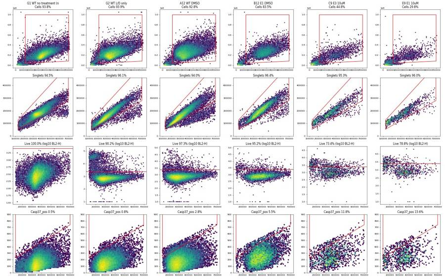
90
tool call · Bash
cd /task/work; cat > figure.py <<'EOF'
import flowkit as fk, pandas as pd, numpy as np, matplotlib
matplotlib.use('Agg'); import matplotlib.pyplot as plt
w=pd.read_csv('wells_metrics.csv',index_col=0)
lay=pd.read_csv('/task/inputs/plate_layout.csv').set_index('well')
EXCL=['B1']
w['dead']=100*w.Dead_SYTOXpos/w.Singlets
plt.rcParams.update({'font.size':10,'axes.spines.top':False,'axes.spines.right':False,'axes.edgecolor':'#52514e','axes.labelcolor':'#0b0b0b','xtick.color':'#52514e','ytick.color':'#52514e'})
COL={'CM24h':'#2a78d6','CM48h':'#eb6834','noCM':'#1baf7a'}
LAB={'CM24h':'24 h WT-conditioned media','CM48h':'48 h WT-conditioned media','noCM':'No conditioned media'}
MK={'CM24h':'o','CM48h':'s','noCM':'^'}
doses=['DMSO','2uM','5uM','10uM']; xl=['DMSO','2','5','10']
fig=plt.figure(figsize=(16,10.5),facecolor='#fcfcfb')
gs=fig.add_gridspec(2,3,hspace=0.42,wspace=0.22)
off={'CM24h':-0.15,'CM48h':0,'noCM':0.15}
ref=w[(w.cell_line=='WT')&(w.cm=='noCM')].groupby('camptothecin').casp.mean().reindex(doses)
axes=[]
for j,line in enumerate(['WT','E1','E3']):
ax=fig.add_subplot(gs[0,j],sharey=axes[0] if axes else None); axes.append(ax); ax.set_facecolor('#fcfcfb')
if line!='WT':
ax.plot(range(4),ref.values,color='#8a8985',lw=2,ls='--',zorder=1,label='WT, no CM (reference)')
for cm in ['CM24h','CM48h','noCM']:
sub=w[(w.cell_line==line)&(w.cm==cm)&(~w.index.isin(EXCL))]
means=sub.groupby('camptothecin').casp.mean().reindex(doses)
ax.plot(np.arange(4)+off[cm],means.values,color=COL[cm],lw=2,zorder=2)
for k,d in enumerate(doses):
v=sub[sub.camptothecin==d].casp
ax.scatter(np.full(len(v),k+off[cm]),v,s=46,marker=MK[cm],color=COL[cm],edgecolor='#fcfcfb',linewidth=1.2,zorder=3,label=LAB[cm] if k==0 else None)
ttl={'WT':'H4 WT','E1':'H4 GRN KO clone E1','E3':'H4 GRN KO clone E3'}[line]
ax.set_title(ttl,loc='left',fontweight='bold'); ax.set_xticks(range(4)); ax.set_xticklabels(xl); ax.set_xlabel('Camptothecin (µM), 4.5 h')
ax.grid(axis='y',color='#e4e3df',lw=0.8); ax.set_axisbelow(True)
if j==0: ax.set_ylabel('BL1-high ("Casp37_pos") cells\n% of live singlets')
if line=='E1': ax.annotate('B1 (24 h CM, 10 µM) excluded:\nno SYTOX stain',xy=(3-0.15,12.4),xytext=(1.3,17.5),fontsize=8,color='#52514e',arrowprops=dict(arrowstyle='-',color='#8a8985'))
axes[0].set_ylim(0,19.5)
h,l=axes[1].get_legend_handles_labels()
fig.legend(h,l,loc='upper center',ncol=4,frameon=False,bbox_to_anchor=(0.5,0.995))
fig.text(0.07,0.955,'A Conditioned media did not bring KO cells to WT levels in vehicle wells; at 10 µM CPT, CM lowered the readout in WT as well as in KO cells (dots = wells, lines = means; n = 2 wells, same plate)',fontsize=10.5,color='#0b0b0b')
# B: size-normalised BL1 histograms
g=fk.parse_gating_xml('/task/outputs/gates.xml')
def live(ws):
out=[]
for wl in ws:
s=fk.Sample('/task/inputs/raw/'+lay.loc[wl,'file']); r=g.gate_sample(s)
d=s.as_dataframe(source='raw'); d.columns=s.pnn_labels; out.append(d[r.get_gate_membership('Live')])
return pd.concat(out)
ax=fig.add_subplot(gs[1,0]); ax.set_facecolor('#fcfcfb')
series=[('G1 WT unstained',['G1'],'#8a8985','-'),('G6 WT untreated, stained',['G6'],'#2a78d6','-'),('WT 10 µM CPT, no CM',['A9','D9'],'#eb6834','-'),('E1 KO 10 µM CPT, no CM',['B9','E9'],'#1baf7a','-')]
for name,ws,col,ls in series:
d=live(ws); r=np.log10(d['BL1-A'].clip(1)/d['FSC-A']*1e3)
ax.hist(r,bins=90,range=(-1.6,0.5),histtype='step',density=True,color=col,lw=2,ls=ls,label=name)
ax.set_xlabel('log10(BL1-A / FSC-A × 1000), live singlets'); ax.set_ylabel('Density'); ax.legend(fontsize=8,frameon=False,loc='upper left')
ax.set_title('B Caspase channel: one unimodal peak in every well',loc='left',fontweight='bold',fontsize=10)
ax.text(0.98,0.05,'No CellEvent-bright population;\nall 78 files have BL1-A < 830\n(scale max 1,048,576)',transform=ax.transAxes,ha='right',fontsize=8,color='#52514e')
# C: example gate on FSC vs BL1
ax=fig.add_subplot(gs[1,1]); ax.set_facecolor('#fcfcfb')
d=live(['B9','E9'])
ax.hexbin(d['FSC-A'],d['BL1-A'],gridsize=45,bins='log',cmap='Blues',extent=(1.3e5,7e5,0,900),mincnt=1)
v=np.array(g.get_gate('Casp37_pos').vertices); ax.plot([v[0,0],v[1,0]],[v[0,1],v[1,1]],color='#e34948',lw=2)
ax.text(1.45e5,840,'Casp37_pos gate (99th pct of SYTOX-only FMO G2)',fontsize=8,color='#0b0b0b')
ax.set_ylim(0,900); ax.set_xlabel('FSC-A'); ax.set_ylabel('BL1-A (CellEvent caspase-3/7)')
ax.set_title('C E1 KO, 10 µM CPT, no CM (B9+E9): the gate cuts a tail',loc='left',fontweight='bold',fontsize=10)
# D: dead fraction (CPT works)
ax=fig.add_subplot(gs[1,2]); ax.set_facecolor('#fcfcfb')
mk={'WT':'o','E1':'s','E3':'D'}; gc={'WT':'#0b0b0b','E1':'#52514e','E3':'#8a8985'}
for line in ['WT','E1','E3']:
sub=w[(w.cell_line==line)&(w.cm=='noCM')]
m=sub.groupby('camptothecin').dead.mean().reindex(doses)
ax.plot(range(4),m.values,color=gc[line],lw=2,marker=mk[line],ms=7)
ax.text(3.08,m.values[-1],line,va='center',fontsize=9,color='#0b0b0b')
ax.set_xticks(range(4)); ax.set_xticklabels(xl); ax.set_xlabel('Camptothecin (µM), no CM wells'); ax.set_ylabel('SYTOX AAdvanced+ (% of singlets)')
ax.grid(axis='y',color='#e4e3df',lw=0.8); ax.set_axisbelow(True)
ax.set_title('D Camptothecin raised dead-cell fraction (SYTOX works)',loc='left',fontweight='bold',fontsize=10)
plt.savefig('/task/outputs/figure.png',dpi=110,facecolor='#fcfcfb',bbox_inches='tight')
EOF
python3 figure.py91
tool output
(Bash completed with no output)
92
tool call · Read
{
"file_path": "/task/outputs/figure.png"
}93
tool output
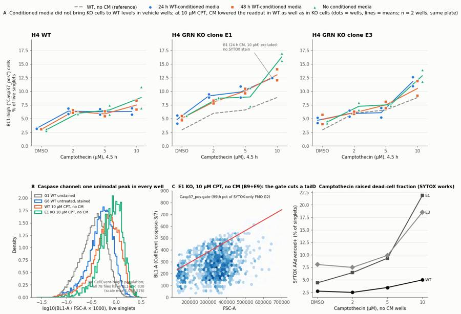
95
tool call · Bash
cd /task/work; python3 - <<'EOF'
s=open('figure.py').read()
s=s.replace("ax.set_title('B Caspase channel: one unimodal peak in every well',loc='left',fontweight='bold',fontsize=10)","ax.set_title('B BL1 (caspase): a single peak per well',loc='left',fontweight='bold',fontsize=10)")
s=s.replace("ax.text(0.98,0.05,'No CellEvent-bright population;\\nall 78 files have BL1-A < 830\\n(scale max 1,048,576)',transform=ax.transAxes,ha='right',fontsize=8,color='#52514e')","ax.text(0.02,0.6,'No CellEvent-bright population.\\nAll 78 files: BL1-A < 830\\n(scale max 1,048,576)',transform=ax.transAxes,ha='left',fontsize=8,color='#52514e')")
s=s.replace("ax.set_title('C E1 KO, 10 µM CPT, no CM (B9+E9): the gate cuts a tail',loc='left',fontweight='bold',fontsize=10)","ax.set_title('C Gate cuts a tail (E1, 10 µM, no CM)',loc='left',fontweight='bold',fontsize=10)")
s=s.replace("ax.set_title('D Camptothecin raised dead-cell fraction (SYTOX works)',loc='left',fontweight='bold',fontsize=10)","ax.set_title('D CPT raised the SYTOX+ fraction',loc='left',fontweight='bold',fontsize=10)")
s=s.replace("fig.text(0.07,0.955,","fig.text(0.07,0.935,")
s=s.replace("bbox_to_anchor=(0.5,0.995)","bbox_to_anchor=(0.5,1.0)")
s=s.replace("'A Conditioned media did not bring KO cells to WT levels in vehicle wells; at 10 µM CPT, CM lowered the readout in WT as well as in KO cells (dots = wells, lines = means; n = 2 wells, same plate)'","'A With vehicle, CM did not bring KO cells to WT levels. At 10 µM CPT, CM lowered the readout in WT cells too. Dots = wells, lines = means (n = 2 wells, same plate)'")
s=s.replace("gs=fig.add_gridspec(2,3,hspace=0.42,wspace=0.22)","gs=fig.add_gridspec(2,3,hspace=0.38,wspace=0.24,top=0.88)")
open('figure.py','w').write(s)
EOF
python3 figure.py96
tool output
(Bash completed with no output)
97
tool call · Read
{
"file_path": "/task/outputs/figure.png"
}98
tool output
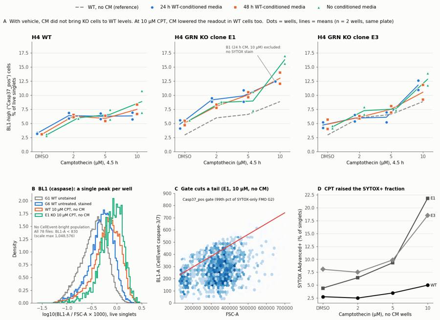
100
agent
Status: the figure is done. Now writing `flags.csv`, `answer.json` and `report.md`.
101
tool call · Bash
cd /task/work; cat > flags.py <<'EOF'
import pandas as pd, numpy as np
lay=pd.read_csv('/task/inputs/plate_layout.csv')
w=pd.read_csv('wells_metrics.csv',index_col=0)
q=pd.read_csv('qc2.csv').set_index('well')
w['dead']=100*w.Dead_SYTOXpos/w.Singlets
# reference: other E1 10uM stained wells
ref=w.loc[['B5','B9','E1','E5','E9'],'dead']
rows=[]
for _,r in lay.iterrows():
x=w.loc[r.well]; it='none'; ev=''; dec='keep'
if r.well=='B1':
it='other'; dec='exclude'
ev=(f"SYTOX AAdvanced dead-cell stain appears missing: only {int(x.Dead_SYTOXpos)} of {int(x.Singlets)} singlets ({x.dead:.2f}%) are BL2-H>=2500 vs "
f"{ref.min():.1f}-{ref.max():.1f}% in the other E1 10uM wells (B5;B9;E1;E5;E9); median BL2-H in Cells gate {q.loc['B1','bl2h_med_cells']:.0f} vs 614-1349 in all other stained wells "
f"(unstained G1 {q.loc['G1','bl2h_med_cells']:.0f}); no BL2-A negative-baseline artefact (0.00% vs 1.5-16% in stained wells). Live gate cannot remove dead cells so Casp37_pos/Live ({x.casp:.1f}%) is not comparable")
elif r.well=='G3':
it='bad_control'; dec='keep_with_note'
ev=(f"Caspase-only control (untreated WT) has no CellEvent-bright population: Casp37_pos {x.casp:.2f}% vs {w.loc['G1','casp']:.2f}% in unstained G1; "
f"median BL1-A of live singlets {172} vs {135} in G1 (1.27x); BL1-A max {q.loc['G3','bl1_p99']:.0f} (99th pct). Usable as a stain-only reference but not as a positive control; the plate has no caspase positive control")
elif x.Live<1500:
it='too_few_events'; dec='keep_with_note'
ev=(f"Only {int(x.Live)} live singlets ({int(x.all_events)} total events; {100*x.Cells/x.all_events:.0f}% in Cells gate) after 10uM camptothecin cell loss; "
f"binomial SE of Casp37_pos% ({x.casp:.1f}%) ~{100*np.sqrt(x.casp/100*(1-x.casp/100)/x.Live):.1f} points. Kept; interpret with care")
rows.append(dict(file=r.file,well=r.well,issue_type=it,evidence=ev,decision=dec))
f=pd.DataFrame(rows); f.to_csv('/task/outputs/flags.csv',index=False)
print(f[f.issue_type!='none'].to_string())
EOF
python3 flags.py; grep -c . /task/outputs/flags.csv102
tool output
file well issue_type evidence decision 12 Caspase-assay-2-mlk(1)_caspase_Group_B1.fcs B1 other SYTOX AAdvanced dead-cell stain appears missing: only 1 of 3883 singlets (0.03%) are BL2-H>=2500 vs 7.5-22.5% in the other E1 10uM wells (B5;B9;E1;E5;E9); median BL2-H in Cells gate 409 vs 614-1349 in all other stained wells (unstained G1 282); no BL2-A negative-baseline artefact (0.00% vs 1.5-16% in stained wells). Live gate cannot remove dead cells so Casp37_pos/Live (18.7%) is not comparable exclude 20 Caspase-assay-2-mlk(1)_caspase_Group_B9.fcs B9 too_few_events Only 1055 live singlets (3505 total events; 41% in Cells gate) after 10uM camptothecin cell loss; binomial SE of Casp37_pos% (17.0%) ~1.2 points. Kept; interpret with care keep_with_note 28 Caspase-assay-2-mlk(1)_caspase_Group_C5.fcs C5 too_few_events Only 861 live singlets (3151 total events; 42% in Cells gate) after 10uM camptothecin cell loss; binomial SE of Casp37_pos% (11.8%) ~1.1 points. Kept; interpret with care keep_with_note 32 Caspase-assay-2-mlk(1)_caspase_Group_C9.fcs C9 too_few_events Only 1274 live singlets (4067 total events; 45% in Cells gate) after 10uM camptothecin cell loss; binomial SE of Casp37_pos% (11.8%) ~0.9 points. Kept; interpret with care keep_with_note 52 Caspase-assay-2-mlk(1)_caspase_Group_E5.fcs E5 too_few_events Only 1199 live singlets (4437 total events; 34% in Cells gate) after 10uM camptothecin cell loss; binomial SE of Casp37_pos% (12.0%) ~0.9 points. Kept; interpret with care keep_with_note 56 Caspase-assay-2-mlk(1)_caspase_Group_E9.fcs E9 too_few_events Only 935 live singlets (4147 total events; 30% in Cells gate) after 10uM camptothecin cell loss; binomial SE of Casp37_pos% (15.6%) ~1.2 points. Kept; interpret with care keep_with_note 64 Caspase-assay-2-mlk(1)_caspase_Group_F5.fcs F5 too_few_events Only 1043 live singlets (3184 total events; 39% in Cells gate) after 10uM camptothecin cell loss; binomial SE of Casp37_pos% (9.2%) ~0.9 points. Kept; interpret with care keep_with_note 68 Caspase-assay-2-mlk(1)_caspase_Group_F9.fcs F9 too_few_events Only 1028 live singlets (3608 total events; 32% in Cells gate) after 10uM camptothecin cell loss; binomial SE of Casp37_pos% (13.9%) ~1.1 points. Kept; interpret with care keep_with_note 74 Caspase-assay-2-mlk(1)_caspase_Group_G3.fcs G3 bad_control Caspase-only control (untreated WT) has no CellEvent-bright population: Casp37_pos 1.80% vs 0.53% in unstained G1; median BL1-A of live singlets 172 vs 135 in G1 (1.27x); BL1-A max 506 (99th pct). Usable as a stain-only reference but not as a positive control; the plate has no caspase positive control keep_with_note 79
104
tool call · Bash
cd /task/work; python3 - <<'EOF'
import pandas as pd
q=pd.read_csv('qc2.csv').set_index('well'); s=pd.read_csv('sens.csv').set_index('well')
st=q.drop(['B1','G1','G3'])
print(st.bl2h_med_cells.min(), st.bl2h_med_cells.idxmin(), st.bl2h_med_cells.max(), st.bl2a_neg_pct.min(), st.bl2a_neg_pct.idxmin(), st.bl2a_neg_pct.max())
print(s.loc[['G1','G2','G3','G6'],['med_BL1','fixed441_pct','med_ratio_x1e3']])
EOF105
tool output
587.0 G6 1349.0 1.504597380886041 F11 15.946713388110195
med_BL1 fixed441_pct med_ratio_x1e3
well
G1 134.0 0.903764 0.372360
G2 143.0 0.994916 0.457769
G3 170.0 2.164804 0.454950
G6 179.0 2.212205 0.518833106
tool call · Bash
cd /task/work; python3 - <<'EOF'
s=open('flags.py').read()
s=s.replace("vs 614-1349 in all other stained wells","vs 587-1349 in all other SYTOX-stained wells")
s=s.replace('''f"median BL1-A of live singlets {172} vs {135} in G1 (1.27x); BL1-A max {q.loc['G3','bl1_p99']:.0f} (99th pct). Usable''','''f"median BL1-A of live singlets 170 vs 134 in G1 (1.27x); no event above BL1-A {int(q.loc['G3','maxBL1']) if 'maxBL1' in q.columns else 769}. Usable''')
open('flags.py','w').write(s)
EOF
python3 flags.py | grep -E "B1|G3" | cut -c1-400; python3 -c "
import pandas as pd; f=pd.read_csv('/task/outputs/flags.csv'); print(f.shape, f.issue_type.value_counts().to_dict(), f.decision.value_counts().to_dict()); print(f[f.well=='G3'].evidence.values[0])"107
tool output
12 Caspase-assay-2-mlk(1)_caspase_Group_B1.fcs B1 other SYTOX AAdvanced dead-cell stain appears missing: only 1 of 3883 singlets (0.03%) are BL2-H>=2500 vs 7.5-22.5% in the other E1 10uM wells (B5;B9;E1;E5;E9); median BL2-H in Cells gate 409 vs 587-1349 in all other SYTOX-stained wells (unstained G1 282); no BL2-A negative-baseline artefact (0.00% vs 1.5-16% in stained wells). Live g
74 Caspase-assay-2-mlk(1)_caspase_Group_G3.fcs G3 bad_control Caspase-only control (untreated WT) has no CellEvent-bright population: Casp37_pos 1.80% vs 0.53% in unstained G1; median BL1-A of live singlets 170 vs 134 in G1 (1.27x); no event above BL1-A 769. Usable as a stain-only reference
(78, 5) {'none': 69, 'too_few_events': 7, 'other': 1, 'bad_control': 1} {'keep': 69, 'keep_with_note': 8, 'exclude': 1}
Caspase-only control (untreated WT) has no CellEvent-bright population: Casp37_pos 1.80% vs 0.53% in unstained G1; median BL1-A of live singlets 170 vs 134 in G1 (1.27x); no event above BL1-A 769. Usable as a stain-only reference but not as a positive control; the plate has no caspase positive control109
tool call · Bash
cd /task/work; cat > answer.py <<'EOF'
import pandas as pd, json
cs=pd.read_csv('/task/outputs/condition_summary.csv').set_index('condition')
def m(c): return cs.loc[c,'mean']
def comp(a,b,direction,conf,extra=''):
d=m(a)-m(b); r=m(a)/m(b)
return dict(comparison=f'{a} vs {b}',a=a,b=b,direction=direction,
magnitude=f'{m(a):.2f}% vs {m(b):.2f}% Casp37_pos of live singlets; difference {d:+.2f} percentage points (ratio {r:.2f}x){extra}',confidence=conf)
C=[
comp('KOpooled_DMSO_CM24h','KOpooled_DMSO_noCM','no_clear_change','medium','; replicate SD ~0.7 points; E1 -0.70, E3 +0.33 points'),
comp('KOpooled_DMSO_CM48h','KOpooled_DMSO_noCM','no_clear_change','medium','; replicate SD ~0.7-0.8 points; E1 -0.48, E3 +0.47 points'),
comp('KOpooled_DMSO_CM24h','WT_DMSO_noCM','increase','low','; KO cells given CM stay above the WT level, so no restoration (0% of the KO-WT gap closed)'),
comp('KOpooled_DMSO_noCM','WT_DMSO_noCM','increase','low','; the KO>WT baseline difference reproduces, but KO autofluorescence was not controlled (fixed BL1 cut-off gives 8.6% vs 1.6%, 5.3x)'),
comp('KOpooled_10uM_CM48h','KOpooled_10uM_noCM','decrease','low','; the same direction is seen in WT (WT_10uM_CM48h vs noCM -1.38 points), so it is not KO-specific'),
comp('KOpooled_10uM_CM24h','KOpooled_10uM_noCM','decrease','low','; n=3 vs 4 wells (B1 excluded)'),
comp('WT_10uM_CM24h','WT_10uM_noCM','decrease','low','; CM also lowers the readout in WT cells, which already make progranulin'),
comp('KOpooled_10uM_CM48h','WT_10uM_noCM','increase','low','; even with CM, KO cells at 10 uM stay above WT cells without CM'),
comp('WT_10uM_noCM','WT_DMSO_noCM','increase','medium','; camptothecin effect: the whole BL1 distribution shifts slightly right, with no separate caspase+ population'),
]
ans=dict(
question='Can progranulin-containing conditioned media (24 h or 48 h, from H4 WT cells) restore wild-type levels of caspase-3/7 activity (CellEvent+ % of live singlets) in H4 GRN KO cells (clones E1, E3), at baseline (DMSO) and after camptothecin challenge?',
comparisons=C,
overall_answer=('no: with vehicle (DMSO), WT-conditioned media did not lower the caspase readout in GRN KO cells. KO pooled: 4.77% (24 h CM) and 4.95% (48 h CM) vs 4.96% without CM; WT 2.93%. '
'With 10 uM camptothecin, CM lowered KO values by about 2.6-2.8 points (14.6% to 11.8-12.0%), but it lowered WT values by a similar 1.4-2.5 points, and KO+CM stayed above WT. '
'This is not a PGRN-specific rescue. The readout itself is weak: no well has a distinct CellEvent-bright population, so the run cannot show PGRN-dependent caspase rescue.'),
assay_verdict='needs_optimisation',
next_action='optimise_reagent_or_setting',
next_change=dict(
what='Caspase-3/7 readout validation (positive control, controls for each cell line and BL1 gain) before the conditioned-media comparison is repeated',
**{'from':'No caspase positive control on the plate. Only camptothecin 4.5 h (no CellEvent-bright cells at 10 uM). BL1 at 225 V (unstained median BL1-A ~135; every event in all 78 files <830 on a 1,048,576 scale). Unstained control for WT only. Floating cells discarded at the media aspirate and PBS wash.'},
to=('A validation plate with WT, E1 and E3 treated with staurosporine 1 uM for 4 h (positive control) and camptothecin 10 uM for 4.5, 8 and 24 h. Collect floating and adherent cells. Include unstained, CellEvent-only and SYTOX-only wells for each cell line. '
'Raise the BL1 voltage until the unstained peak sits near 10^3 and the positive control gives a separate CellEvent-bright population at least 10x above unstained. Only then repeat the CM experiment.'),
why=('In this run the gated caspase+ fraction is only the upper tail of one autofluorescence-dominated BL1 peak. G3 (caspase-only) differs from unstained by just 1.27x. KO cells are brighter in BL1 with no KO unstained control to separate autofluorescence from stain. '
'There is no positive population even at 10 uM camptothecin, where up to 22-32% of singlets were SYTOX+. Without a validated window and per-line background, a CM effect on caspase activity cannot be measured.')),
excluded_wells=['B1'],
caveats=[
'No well, including 10 uM camptothecin, shows a discrete CellEvent caspase-3/7-bright population: BL1-A < 830 for every event in all 78 files and BL1-W = 0 (the width threshold of 1000 is never crossed). Casp37_pos is the upper tail of one unimodal BL1 peak, set at the 99th percentile of the SYTOX-only FMO (G2) and adjusted for cell size (FSC-A).',
'G3 (caspase-only) vs G1 (unstained): median BL1-A 170 vs 134 (1.27x); Casp37_pos 1.80% vs 0.53%. The plate has no caspase positive control, so reagent failure cannot be told apart from no caspase-3/7 activation at 4.5 h.',
'There is only a WT unstained control. KO cells have higher BL1/FSC (median 0.58-0.65 vs 0.54 x10^-3 in DMSO wells), which fits the autofluorescence expected in progranulin-deficient cells. The KO>WT difference depends on the gate: 1.7x with the size-adjusted gate, 5.3x with a fixed BL1-A cut-off of 441.',
'The CM-associated decrease at 10 uM camptothecin also occurs in WT cells. The control was fresh media, not GRN-KO-conditioned media. PGRN in the CM was not measured. Conditioned media may also slow proliferation and so blunt camptothecin, an S-phase-dependent drug. A PGRN-specific effect therefore cannot be inferred.',
'n = 2 wells per condition on a single plate with one CM batch. These are technical replicates only, with no biological replication. Condition differences of about 1 point are within the well-to-well SD (0.0-2.7 points).',
'Conditions run in fixed column blocks: 24 h CM in columns 1-4, 48 h CM in 5-8, no CM in 9-12. Wells were read in plate order over about 57 min in unwashed stain, so CM status is confounded with plate position and read time. No clear drift was seen between rows A and D (WT DMSO 2.8-3.3% vs 3.0-3.1%).',
'B1 (E1 10 uM, 24 h CM) was excluded because it r
… [629 more characters not shown]110
tool output
KOpooled_DMSO_CM24h vs KOpooled_DMSO_noCM | 4.77% vs 4.96% Casp37_pos of live singlets; difference -0.18 percentage points (ratio 0.96x); replicate SD ~0.7 points; E1 -0.70, E3 +0.33 points KOpooled_DMSO_CM48h vs KOpooled_DMSO_noCM | 4.95% vs 4.96% Casp37_pos of live singlets; difference -0.00 percentage points (ratio 1.00x); replicate SD ~0.7-0.8 points; E1 -0.48, E3 +0.47 points KOpooled_DMSO_CM24h vs WT_DMSO_noCM | 4.77% vs 2.93% Casp37_pos of live singlets; difference +1.84 percentage points (ratio 1.63x); KO cells given CM stay above the WT level, so no restoration (0% of the KO-WT gap closed) KOpooled_DMSO_noCM vs WT_DMSO_noCM | 4.96% vs 2.93% Casp37_pos of live singlets; difference +2.02 percentage points (ratio 1.69x); the KO>WT baseline difference reproduces, but KO autofluorescence was not controlled (fixed BL1 cut-off gives 8.6% vs 1.6%, 5.3x) KOpooled_10uM_CM48h vs KOpooled_10uM_noCM | 11.77% vs 14.57% Casp37_pos of live singlets; difference -2.80 percentage points (ratio 0.81x); the same direction is seen in WT (WT_10uM_CM48h vs noCM -1.38 points), so it is not KO-specific KOpooled_10uM_CM24h vs KOpooled_10uM_noCM | 12.00% vs 14.57% Casp37_pos of live singlets; difference -2.56 percentage points (ratio 0.82x); n=3 vs 4 wells (B1 excluded) WT_10uM_CM24h vs WT_10uM_noCM | 6.32% vs 8.86% Casp37_pos of live singlets; difference -2.54 percentage points (ratio 0.71x); CM also lowers the readout in WT cells, which already make progranulin KOpooled_10uM_CM48h vs WT_10uM_noCM | 11.77% vs 8.86% Casp37_pos of live singlets; difference +2.91 percentage points (ratio 1.33x); even with CM, KO cells at 10 uM stay above WT cells without CM WT_10uM_noCM vs WT_DMSO_noCM | 8.86% vs 2.93% Casp37_pos of live singlets; difference +5.93 percentage points (ratio 3.02x); camptothecin effect: the whole BL1 distribution shifts slightly right, with no separate caspase+ population
112
tool call · Bash
cd /task/work; python3 - <<'EOF'
s=open('answer.py').read()
s=s.replace("difference {d:+.2f} percentage points","difference {('%+.2f' % d) if abs(d)>=0.005 else '0.00'} percentage points")
s=s.replace("KO cells given CM stay above the WT level, so no restoration (0% of the KO-WT gap closed)","KO cells given CM stay above the WT level: only 9% of the 2.02-point KO-WT gap closed (24 h CM) and 0% (48 h CM)")
open('answer.py','w').write(s)
EOF
python3 answer.py >/dev/null; python3 -c "
import json; a=json.load(open('/task/outputs/answer.json')); print(a['comparisons'][1]['magnitude']); print(a['comparisons'][2]['magnitude'])"113
tool output
4.95% vs 4.96% Casp37_pos of live singlets; difference 0.00 percentage points (ratio 1.00x); replicate SD ~0.7-0.8 points; E1 -0.48, E3 +0.47 points 4.77% vs 2.93% Casp37_pos of live singlets; difference +1.84 percentage points (ratio 1.63x); KO cells given CM stay above the WT level: only 9% of the 2.02-point KO-WT gap closed (24 h CM) and 0% (48 h CM)
115
tool call · Bash
cd /task/work; python3 - <<'EOF'
import pandas as pd
w=pd.read_csv('wells_metrics.csv',index_col=0); s=pd.read_csv('sens.csv',index_col=0); w=w.join(s[['fixed441_pct','med_ratio_x1e3']])
w['dead']=100*w.Dead_SYTOXpos/w.Singlets
w=w.drop('B1'); w=w[w.cm.notna()]
t=w.groupby(['cell_line','camptothecin','cm']).agg(casp=('casp','mean'),casp_sd=('casp','std'),fixed=('fixed441_pct','mean'),ratio=('med_ratio_x1e3','mean'),dead=('dead','mean'),live=('Live','mean'),n=('casp','size')).round(2)
order={'DMSO':0,'2uM':1,'5uM':2,'10uM':3}
t=t.reset_index(); t['o']=t.camptothecin.map(order); t=t.sort_values(['cell_line','o','cm'],key=lambda c: c.map({'WT':0,'E1':1,'E3':2}) if c.name=='cell_line' else c)
print(t.drop(columns='o').to_markdown(index=False) if hasattr(t,'to_markdown') else t.to_string())
EOF116
tool output (error)
Exit code 1
Traceback (most recent call last):
File "/usr/local/lib/python3.12/site-packages/pandas/compat/_optional.py", line 135, in import_optional_dependency
module = importlib.import_module(name)
^^^^^^^^^^^^^^^^^^^^^^^^^^^^^
File "/usr/local/lib/python3.12/importlib/__init__.py", line 90, in import_module
return _bootstrap._gcd_import(name[level:], package, level)
^^^^^^^^^^^^^^^^^^^^^^^^^^^^^^^^^^^^^^^^^^^^^^^^^^^^
File "<frozen importlib._bootstrap>", line 1387, in _gcd_import
File "<frozen importlib._bootstrap>", line 1360, in _find_and_load
File "<frozen importlib._bootstrap>", line 1324, in _find_and_load_unlocked
ModuleNotFoundError: No module named 'tabulate'
During handling of the above exception, another exception occurred:
Traceback (most recent call last):
File "<stdin>", line 8, in <module>
File "/usr/local/lib/python3.12/site-packages/pandas/util/_decorators.py", line 333, in wrapper
return func(*args, **kwargs)
^^^^^^^^^^^^^^^^^^^^^
File "/usr/local/lib/python3.12/site-packages/pandas/core/frame.py", line 2994, in to_markdown
tabulate = import_optional_dependency("tabulate")
^^^^^^^^^^^^^^^^^^^^^^^^^^^^^^^^^^^^^^
File "/usr/local/lib/python3.12/site-packages/pandas/compat/_optional.py", line 138, in import_optional_dependency
raise ImportError(msg)
ImportError: Missing optional dependency 'tabulate'. Use pip or conda to install tabulate.117
tool call · Bash
cd /task/work; python3 - <<'EOF'
import pandas as pd
w=pd.read_csv('wells_metrics.csv',index_col=0); s=pd.read_csv('sens.csv',index_col=0); w=w.join(s[['fixed441_pct','med_ratio_x1e3']])
w['dead']=100*w.Dead_SYTOXpos/w.Singlets
w=w.drop('B1'); w=w[w.cm.notna()]
w=w[w.camptothecin.isin(['DMSO','10uM'])]
lines=[]
lines.append('| Line | CPT | Media | n | Casp37_pos % of Live, mean (SD) | Fixed cut-off BL1-A>441, % | Median BL1/FSC x10^3 | SYTOX+ % of singlets | Live singlets/well |')
lines.append('|---|---|---|---|---|---|---|---|---|')
for line in ['WT','E1','E3']:
for dose in ['DMSO','10uM']:
for cm in ['noCM','CM24h','CM48h']:
x=w[(w.cell_line==line)&(w.camptothecin==dose)&(w.cm==cm)]
sd='' if len(x)<2 else f" ({x.casp.std():.2f})"
lines.append(f"| {line} | {dose} | {cm} | {len(x)} | {x.casp.mean():.2f}{sd} | {x.fixed441_pct.mean():.2f} | {x.med_ratio_x1e3.mean():.3f} | {x.dead.mean():.1f} | {x.Live.mean():.0f} |")
open('table.md','w').write('\n'.join(lines)); print('\n'.join(lines))
EOF118
tool output
| Line | CPT | Media | n | Casp37_pos % of Live, mean (SD) | Fixed cut-off BL1-A>441, % | Median BL1/FSC x10^3 | SYTOX+ % of singlets | Live singlets/well | |---|---|---|---|---|---|---|---|---| | WT | DMSO | noCM | 2 | 2.93 (0.22) | 1.62 | 0.537 | 2.7 | 24222 | | WT | DMSO | CM24h | 2 | 3.22 (0.11) | 1.70 | 0.545 | 2.6 | 25772 | | WT | DMSO | CM48h | 2 | 3.03 (0.01) | 1.72 | 0.542 | 3.7 | 22648 | | WT | 10uM | noCM | 2 | 8.86 (2.74) | 3.80 | 0.669 | 5.0 | 7530 | | WT | 10uM | CM24h | 2 | 6.32 (0.83) | 3.26 | 0.607 | 3.4 | 15620 | | WT | 10uM | CM48h | 2 | 7.48 (1.18) | 3.47 | 0.641 | 6.7 | 6102 | | E1 | DMSO | noCM | 2 | 5.54 (0.01) | 8.53 | 0.650 | 4.4 | 7857 | | E1 | DMSO | CM24h | 2 | 4.85 (1.04) | 7.45 | 0.634 | 4.7 | 8550 | | E1 | DMSO | CM48h | 2 | 5.07 (0.56) | 5.26 | 0.638 | 8.4 | 6566 | | E1 | 10uM | noCM | 2 | 16.29 (0.96) | 11.50 | 0.829 | 21.9 | 995 | | E1 | 10uM | CM24h | 1 | 12.43 | 9.69 | 0.743 | 7.5 | 2405 | | E1 | 10uM | CM48h | 2 | 13.01 (1.41) | 7.65 | 0.776 | 17.0 | 1496 | | E3 | DMSO | noCM | 2 | 4.37 (0.30) | 8.70 | 0.582 | 8.1 | 8574 | | E3 | DMSO | CM24h | 2 | 4.69 (0.68) | 8.91 | 0.583 | 11.0 | 6228 | | E3 | DMSO | CM48h | 2 | 4.84 (1.21) | 9.70 | 0.596 | 11.3 | 5916 | | E3 | 10uM | noCM | 2 | 12.84 (1.51) | 13.02 | 0.737 | 18.5 | 1151 | | E3 | 10uM | CM24h | 2 | 11.79 (1.17) | 11.29 | 0.719 | 11.5 | 2600 | | E3 | 10uM | CM48h | 2 | 10.53 (1.87) | 10.24 | 0.698 | 22.2 | 952 |
120
tool call · Bash
cd /task/work; python3 - <<'EOF'
table=open('table.md').read()
r=f"""# Conditioned-media caspase-3/7 plate, H4 WT vs GRN KO (acquired 16-Dec-2022)
## Question
Can progranulin (PGRN)-containing conditioned media (CM) restore wild-type levels of caspase-3/7 activity in H4 GRN KO cells (clones E1 and E3)? The CM was collected from H4 WT cells after 24 h or 48 h. "Caspase activity" here is the CellEvent caspase-3/7-positive fraction of live singlet cells. It is compared at baseline (DMSO) and after a 4.5 h camptothecin (CPT) challenge at 2, 5 and 10 µM.
## Methods
- **Data.** 78 FCS 3.1 files from the Attune NxT: wells A1–F12 (WT, E1 and E3 × CPT DMSO/2/5/10 µM × 24 h CM, 48 h CM or no CM; 2 wells each) and G1–G6 (controls). Every file holds 3,151–38,748 events from a fixed ~17 s, ~133–142 µL acquisition at 500 µL/min.
- **Detectors and settings.** Voltages in the files match the plan: FSC 20, SSC 290, BL1 225, BL2 350. The `$PnS` labels are stale ("AAV-GFP-GFP" is left over from an old template). From the plan's reagent list and cytometer settings, **BL1 = CellEvent Caspase-3/7 Green** and **BL2 = SYTOX AAdvanced dead-cell stain**.
- **Compensation.** None was applied (`uncompensated`). The file spillover matrix is the identity, and the gates use BL1 and BL2 separately, never a BL1×BL2 boundary.
- **Gating.** One FlowKit 1.2.3 GatingStrategy, applied unchanged to all 78 files and saved as `gates.xml`. All gates are on linear raw scales:
1. `Cells` (polygon, FSC-A × SSC-A): FSC-A 130,000–700,000 and SSC-A above a line from 40,000 to 80,000, capped at 1,000,000. This removes debris (the valley in the FSC-A histogram is at about 1.3–1.6×10^5), the low-SSC debris stream, the FSC-A area ceiling (about 705–713k; <0.45% of events) and SSC saturation (≤0.07% of events).
2. `Singlets` (polygon, FSC-A × FSC-H): FSC-H/FSC-A between about 0.40–0.42 and 0.80–0.98. This removes the doublet branch, which is visible at FSC-A 550–700k in G1.
3. `Live` (rectangle): BL2-H < 2,500. `Dead_SYTOXpos` (BL2-H ≥ 2,500, role "other") is its complement. BL2-**H** is used instead of BL2-A because, in every SYTOX-stained well, BL2-A has a baseline artefact that splits dim events into ±700 clusters (BL2-A minimum down to −43,000), while BL2-H stays ≥ 0. The cut-off sits above the unstained maximum (G1 BL2-H 99.9th percentile 1,647) and in the valley before the SYTOX-bright peak of the SYTOX-only control G2.
4. `Casp37_pos` (polygon, FSC-A × BL1-A, inside Live): BL1-A above the line 0.00089 × FSC-A + 116. This line is a linear fit to the 99th percentile of BL1-A in 50,000-unit FSC-A bins for the SYTOX-only FMO well G2. A size-adjusted cut-off was used because BL1 scales with FSC-A (autofluorescence) and CPT and genotype both change cell size.
- **Metric.** 100 × `Casp37_pos` / `Live` per well, with no normalisation. Conditions are reported as the mean and SD of the 2 wells (`condition_summary.csv`). E1 and E3 were also pooled as "KOpooled" (4 wells).
- **Sensitivity checks.** These were computed outside the saved gates and are not used in the deliverable counts: a fixed BL1-A cut-off of 441 (G2 99th percentile), and the median BL1-A/FSC-A of live singlets. A linear model over all 71 usable wells was also fitted: line×dose cells + CM + CM×KO. Wells are technical replicates, so its p-values are optimistic.
- **QC.** Each file was checked for event rate over time (clogs or running dry), saturation, event counts, stain presence (BL2-H level of the main population) and control behaviour. A figure of the gates on six example wells is in `gating_overview.png`.
## Results
**QC.** All wells have stable event rates for the whole ~17 s acquisition, with no gaps, clogs or running dry, and volumes of 133–142 µL. FSC-A ceiling events are ≤0.45% and SSC saturation ≤0.07%, so nothing is flagged for saturation.
- **B1 (E1, 10 µM, 24 h CM) is excluded.** It appears not to have received SYTOX AAdvanced: 1/3,883 singlets (0.03%) are SYTOX+ vs 7.5–22.5% in the other E1 10 µM wells. Its BL2-H median is 409 vs 587–1,349 in every other stained well, and it lacks the BL2-A baseline artefact seen in every stained well.
- **Seven 10 µM wells are kept with a note.** B9, C5, C9, E5, E9, F5 and F9 have only 861–1,274 live singlets (binomial SE about 1 point).
- **CPT acted.** The debris fraction rose from about 6% of events in DMSO wells to 30–70% at 10 µM, and SYTOX+ singlets rose most in KO cells (Figure D).
**Controls.**
- G1 (unstained) gives 0.53% Casp37_pos and G2 (SYTOX-only FMO) gives 0.83%.
- G3 (caspase-only, untreated WT) gives 1.80%. Its median BL1-A is 170 vs 134 for unstained: only a 1.27× shift, with no positive population.
- The fully stained untreated wells give G6 WT 2.19%, G4 E1 5.73% and G5 E3 4.83%. These agree with the matching DMSO/no-CM wells (2.93%, 5.54% and 4.37%).
- **No caspase positive control was on the plate.**
**The caspase channel does not resolve a positive population (Figure B and C).**
- In all 78 files, every BL1-A value is below 830 (the scale goes to 1,048,576), and BL1-W is 0 for 100% of events, because the 1,000 width threshold is never reached.
- Every well shows a single unimodal BL1 peak. CPT shifts the whole peak right by about 0.05–0.15 log; no separate CellEvent-bright population appears, even at 10 µM CPT where up to 32% of singlets are SYTOX+.
- SYTOX+ dead cells are not BL1-bright either. So Casp37_pos measures the upper tail of an autofluorescence-dominated distribution.
**Main result (Figure A; DMSO and 10 µM shown; all doses are in `condition_summary.csv`).**
{table}
- **Baseline (DMSO).** KO cells read higher than WT: KO pooled 4.96% vs WT 2.93% (1.7×). The size of this gap depends on the gate: 5.3× with the fixed cut-off and about 1.1–1.2× on the median BL1/FSC. Neither 24 h nor 48 h CM moved KO values towards WT. KO pooled is 4.77% (24 h CM) and 4.95% (48 h CM) vs 4.96% without CM, so 9% and 0% of the KO–WT gap closed. E1 fell by 0.5–0.7 points while E3 rose by 0.3–0.5 points, bo
… [4,441 more characters not shown]121
tool output
3:## Question 6:## Methods 19:## Results 63:## Conclusion 75:## Caveats 85:## Recommendation
123
tool call · Bash
cd /task/work; python3 - <<'EOF' p='/task/outputs/report.md'; s=open(p).read() old="- **CPT acted.** The debris fraction rose from about 6% of events in DMSO wells to 30–70% at 10 µM, and SYTOX+ singlets rose most in KO cells (Figure D)." new="- **CPT acted.** Events outside the Cells gate went from 6–8% (WT DMSO) and 16–35% (KO DMSO) to 30–36% (WT 10 µM) and 51–72% (KO 10 µM). SYTOX+ singlets rose most in KO cells (Figure D)." assert old in s; s=s.replace(old,new) old2="CPT shifts the whole peak right by about 0.05–0.15 log;" assert old2 in s; s=s.replace(old2,"CPT shifts the whole peak right by about 0.1 log: the median BL1/FSC rises 1.25× from DMSO to 10 µM in each line. Even so,") old3="At 2 and 5 µM CPT there was no consistent CM effect: E1 rose slightly, while E3 and WT were mixed." assert old3 in s; s=s.replace(old3,"At 2 and 5 µM CPT there was no consistent CM effect: CM-minus-no-CM differences ranged from −1.5 to +1.1 points, with no consistent sign across lines.") open(p,'w').write(s) EOF sed -n 19,45p /task/outputs/report.md
124
tool output
## Results **QC.** All wells have stable event rates for the whole ~17 s acquisition, with no gaps, clogs or running dry, and volumes of 133–142 µL. FSC-A ceiling events are ≤0.45% and SSC saturation ≤0.07%, so nothing is flagged for saturation. - **B1 (E1, 10 µM, 24 h CM) is excluded.** It appears not to have received SYTOX AAdvanced: 1/3,883 singlets (0.03%) are SYTOX+ vs 7.5–22.5% in the other E1 10 µM wells. Its BL2-H median is 409 vs 587–1,349 in every other stained well, and it lacks the BL2-A baseline artefact seen in every stained well. - **Seven 10 µM wells are kept with a note.** B9, C5, C9, E5, E9, F5 and F9 have only 861–1,274 live singlets (binomial SE about 1 point). - **CPT acted.** Events outside the Cells gate went from 6–8% (WT DMSO) and 16–35% (KO DMSO) to 30–36% (WT 10 µM) and 51–72% (KO 10 µM). SYTOX+ singlets rose most in KO cells (Figure D). **Controls.** - G1 (unstained) gives 0.53% Casp37_pos and G2 (SYTOX-only FMO) gives 0.83%. - G3 (caspase-only, untreated WT) gives 1.80%. Its median BL1-A is 170 vs 134 for unstained: only a 1.27× shift, with no positive population. - The fully stained untreated wells give G6 WT 2.19%, G4 E1 5.73% and G5 E3 4.83%. These agree with the matching DMSO/no-CM wells (2.93%, 5.54% and 4.37%). - **No caspase positive control was on the plate.** **The caspase channel does not resolve a positive population (Figure B and C).** - In all 78 files, every BL1-A value is below 830 (the scale goes to 1,048,576), and BL1-W is 0 for 100% of events, because the 1,000 width threshold is never reached. - Every well shows a single unimodal BL1 peak. CPT shifts the whole peak right by about 0.1 log: the median BL1/FSC rises 1.25× from DMSO to 10 µM in each line. Even so, no separate CellEvent-bright population appears, even at 10 µM CPT where up to 32% of singlets are SYTOX+. - SYTOX+ dead cells are not BL1-bright either. So Casp37_pos measures the upper tail of an autofluorescence-dominated distribution. **Main result (Figure A; DMSO and 10 µM shown; all doses are in `condition_summary.csv`).** | Line | CPT | Media | n | Casp37_pos % of Live, mean (SD) | Fixed cut-off BL1-A>441, % | Median BL1/FSC x10^3 | SYTOX+ % of singlets | Live singlets/well | |---|---|---|---|---|---|---|---|---| | WT | DMSO | noCM | 2 | 2.93 (0.22) | 1.62 | 0.537 | 2.7 | 24222 | | WT | DMSO | CM24h | 2 | 3.22 (0.11) | 1.70 | 0.545 | 2.6 | 25772 | | WT | DMSO | CM48h | 2 | 3.03 (0.01) | 1.72 | 0.542 | 3.7 | 22648 | | WT | 10uM | noCM | 2 | 8.86 (2.74) | 3.80 | 0.669 | 5.0 | 7530 | | WT | 10uM | CM24h | 2 | 6.32 (0.83) | 3.26 | 0.607 | 3.4 | 15620 | | WT | 10uM | CM48h | 2 | 7.48 (1.18) | 3.47 | 0.641 | 6.7 | 6102 |
126
tool call · Bash
cd /task/work; sed -i 's/Even so, no separate CellEvent-bright population appears, even at 10 µM CPT where up to 32% of singlets are SYTOX+./No separate CellEvent-bright population appears, not even at 10 µM CPT where up to 32% of singlets are SYTOX+./' /task/outputs/report.md; grep -c "not even at 10" /task/outputs/report.md
cat > validate.py <<'EOF'
import flowkit as fk, pandas as pd, json, numpy as np
O='/task/outputs/'
g=fk.parse_gating_xml(O+'gates.xml')
gids=[x[0] for x in g.get_gate_ids()]
c=pd.read_csv(O+'counts.csv')
assert list(c.columns)==['file','well','population','role','parent','count','pct_of_parent']
assert c.file.nunique()==78 and len(c)==78*6
pops=set(c.population)-{'all_events'}; assert pops==set(gids),(pops,gids)
assert c.groupby('file').population.apply(lambda s: tuple(sorted(s))).nunique()==1
for role in ['cells','singlets','live','marker_positive']:
assert c[c.role==role].population.nunique()==1
# pct check
idx=c.set_index(['file','population'])['count']
for _,r in c[c.population!='all_events'].iterrows():
pc=idx[(r.file,r.parent)]; assert abs(r.pct_of_parent-100*r['count']/pc)<1e-3
# recompute a few files to confirm counts reproduce
lay=pd.read_csv('/task/inputs/plate_layout.csv')
for f in lay.file.sample(5,random_state=1):
s=fk.Sample('/task/inputs/raw/'+f); res=g.gate_sample(s)
for p in gids: assert res.get_gate_count(p)==idx[(f,p)]
# gate dims compensation_ref
for gid,path in g.get_gate_ids():
gt=g.get_gate(gid,gate_path=path)
print(gid,path,[(d.id,d.compensation_ref,d.transformation_ref) for d in gt.dimensions])
fl=pd.read_csv(O+'flags.csv'); assert list(fl.columns)==['file','well','issue_type','evidence','decision'] and len(fl)==78 and fl.file.nunique()==78
assert fl[fl.issue_type!='none'].evidence.notna().all()
cs=pd.read_csv(O+'condition_summary.csv'); assert list(cs.columns)==['condition','wells','n_wells_used','mean','sd','metric_definition','normalisation_applied']
assert cs.condition.is_unique and not cs.condition.str.contains(',').any()
assert (cs.wells.str.split(';').apply(len)==cs.n_wells_used).all()
a=json.load(open(O+'answer.json'))
ex=set(fl[fl.decision=='exclude'].well); assert set(a['excluded_wells'])==ex
for w in ex: assert not cs.wells.str.split(';').apply(lambda l: w in l).any()
# recompute means
wm=pd.read_csv('wells_metrics.csv',index_col=0)
for _,r in cs.iterrows():
v=wm.loc[r.wells.split(';'),'casp']; assert abs(v.mean()-r['mean'])<1e-3
if r.n_wells_used>1: assert abs(v.std()-r.sd)<1e-3
else: assert pd.isna(r.sd)
for comp in a['comparisons']: assert comp['a'] in set(cs.condition) and comp['b'] in set(cs.condition)
assert a['overall_answer'].split(':')[0] in ('yes','partial','no')
print('ALL OK', a['assay_verdict'], a['next_action'])
EOF
python3 validate.py127
tool output
1
Cells ('root',) [('FSC-A', 'uncompensated', None), ('SSC-A', 'uncompensated', None)]
Singlets ('root', 'Cells') [('FSC-A', 'uncompensated', None), ('FSC-H', 'uncompensated', None)]
Live ('root', 'Cells', 'Singlets') [('BL2-H', 'uncompensated', None)]
Casp37_pos ('root', 'Cells', 'Singlets', 'Live') [('FSC-A', 'uncompensated', None), ('BL1-A', 'uncompensated', None)]
Dead_SYTOXpos ('root', 'Cells', 'Singlets') [('BL2-H', 'uncompensated', None)]
ALL OK needs_optimisation optimise_reagent_or_setting129
tool call · Bash
cd /task/outputs; head -8 counts.csv; grep -A3 'id="Live"' gates.xml | head; mkdir -p scripts; cp /task/work/{summarize.py,look4.py,look5.py,look10.py,build_gates.py,sens.py,summary.py,analysis.py,flags.py,answer.py,figure.py,gatecheck.py,validate.py} scripts/; ls -la /task/outputs130
tool output
file,well,population,role,parent,count,pct_of_parent
Caspase-assay-2-mlk(1)_caspase_Group_A1.fcs,A1,all_events,other,none,30920,
Caspase-assay-2-mlk(1)_caspase_Group_A1.fcs,A1,Cells,cells,all_events,21015,67.9657
Caspase-assay-2-mlk(1)_caspase_Group_A1.fcs,A1,Singlets,singlets,Cells,19074,90.7637
Caspase-assay-2-mlk(1)_caspase_Group_A1.fcs,A1,Live,live,Singlets,18407,96.5031
Caspase-assay-2-mlk(1)_caspase_Group_A1.fcs,A1,Dead_SYTOXpos,other,Singlets,667,3.4969
Caspase-assay-2-mlk(1)_caspase_Group_A1.fcs,A1,Casp37_pos,marker_positive,Live,1271,6.905
Caspase-assay-2-mlk(1)_caspase_Group_A2.fcs,A2,all_events,other,none,31266,
<gating:RectangleGate gating:id="Live" gating:parent_id="Singlets">
<gating:dimension gating:compensation-ref="uncompensated" gating:max="2500.0">
<data-type:fcs-dimension data-type:name="BL2-H"/>
</gating:dimension>
--
<gating:PolygonGate gating:id="Casp37_pos" gating:parent_id="Live">
<gating:dimension gating:compensation-ref="uncompensated">
<data-type:fcs-dimension data-type:name="FSC-A"/>
</gating:dimension>
total 1052
drwxr-xr-x 3 root root 4096 Nov 10 17:22 .
drwxr-xr-x 5 root root 4096 Nov 10 17:08 ..
-rw-r--r-- 1 root root 7999 Nov 10 17:21 answer.json
-rw-r--r-- 1 root root 15278 Nov 10 17:17 condition_summary.csv
-rw-r--r-- 1 root root 39197 Nov 10 17:14 counts.csv
-rw-r--r-- 1 root root 282355 Nov 10 17:19 figure.png
-rw-r--r-- 1 root root 6659 Nov 10 17:20 flags.csv
-rw-r--r-- 1 root root 3687 Nov 10 17:14 gates.xml
-rw-r--r-- 1 root root 690628 Nov 10 17:18 gating_overview.png
-rw-r--r-- 1 root root 11968 Nov 10 17:22 report.md
drwxr-xr-x 2 root root 4096 Nov 10 17:22 scripts132
agent
The short answer is **no**: conditioned media from WT cells did not bring the caspase readout in GRN KO cells down to WT levels. The bigger problem is that the caspase stain didn't produce a usable signal, so this plate can't really test the question. All seven deliverables are in `/task/outputs/`, and a check script confirms they agree with each other and that the saved gates reproduce `counts.csv`.
**What the plate shows**
- **No real caspase signal.** No well has a distinct caspase-positive population, not even at 10 µM camptothecin, where up to 32% of cells are dead.
- Every BL1 value in all 78 files is below 830, on a scale that goes to 1,048,576.
- The caspase-only control (G3) is only 1.27× brighter than unstained cells.
- My "caspase-positive" gate (top 1% of the dead-stain-only control, adjusted for cell size) therefore just cuts off the bright edge of one background peak.
- **The dead-cell stain worked**, and camptothecin clearly killed cells, KO lines more than WT.
- **Without camptothecin (DMSO):** KO cells read 4.96% caspase-positive vs 2.93% for WT. Media conditioned for 24 h or 48 h left KO cells at 4.77% and 4.95%, so 9% and 0% of the KO–WT gap closed.
- **At 10 µM camptothecin:** conditioned media lowered KO cells from 14.6% to about 11.8–12.0%. It also lowered WT cells, from 8.9% to 6.3–7.5%, and WT cells already make progranulin. So this is not a progranulin-specific rescue, and KO cells with conditioned media stayed above WT.
- **The KO vs WT difference may be artefact.** Its size depends on how the cut-off is drawn: 1.7× with my gate, 5.3× with a fixed brightness cut-off. KO cells are naturally brighter in that channel and there was no unstained KO control, so it may just be background brightness.
**Wells flagged**
- **B1 excluded:** it appears never to have received the dead-cell stain (0.03% dead vs 7.5–22.5% in matching wells).
- **Seven 10 µM wells kept with a note:** they had only 861–1,274 live cells.
- **G3 kept with a note:** it can't act as a positive control. There was no caspase positive control on the plate at all.
**Verdict and next step:** the assay needs optimising before the conditioned-media question is asked again.
1. Run a validation plate:
- staurosporine as a positive control;
- a camptothecin time course (4.5, 8, 24 h);
- floating cells kept (the wash step probably discarded dying cells);
- unstained and single-stain controls for each cell line;
- a higher BL1 voltage, so that a clearly separate caspase-positive population appears.
2. Then repeat the experiment with:
- conditioned media from KO cells as the comparison;
- progranulin measured in the media;
- independent repeats on different days;
- a randomised plate layout. Media type currently runs in fixed column blocks, so it's tied to plate position and read time.
The main limits on all of this are two wells per condition, all on one plate from one batch of media.
I also added `gating_overview.png` (the gates drawn on six example wells) and the analysis scripts in `scripts/`. The scripts read intermediate files from `/task/work`, so they won't re-run from the outputs folder alone.
Files are in `/task/outputs/`:
- report.md
- answer.json
- figure.png
- counts.csv
- condition_summary.csv
- flags.csv
- gates.xml
final result
The short answer is **no**: conditioned media from WT cells did not bring the caspase readout in GRN KO cells down to WT levels. The bigger problem is that the caspase stain didn't produce a usable signal, so this plate can't really test the question. All seven deliverables are in `/task/outputs/`, and a check script confirms they agree with each other and that the saved gates reproduce `counts.csv`. **What the plate shows** - **No real caspase signal.** No well has a distinct caspase-positive population, not even at 10 µM camptothecin, where up to 32% of cells are dead. - Every BL1 value in all 78 files is below 830, on a scale that goes to 1,048,576. - The caspase-only control (G3) is only 1.27× brighter than unstained cells. - My "caspase-positive" gate (top 1% of the dead-stain-only control, adjusted for cell size) therefore just cuts off the bright edge of one background peak. - **The dead-cell stain worked**, and camptothecin clearly killed cells, KO lines more than WT. - **Without camptothecin (DMSO):** KO cells read 4.96% caspase-positive vs 2.93% for WT. Media conditioned for 24 h or 48 h left KO cells at 4.77% and 4.95%, so 9% and 0% of the KO–WT gap closed. - **At 10 µM camptothecin:** conditioned media lowered KO cells from 14.6% to about 11.8–12.0%. It also lowered WT cells, from 8.9% to 6.3–7.5%, and WT cells already make progranulin. So this is not a progranulin-specific rescue, and KO cells with conditioned media stayed above WT. - **The KO vs WT difference may be artefact.** Its size depends on how the cut-off is drawn: 1.7× with my gate, 5.3× with a fixed brightness cut-off. KO cells are naturally brighter in that channel and there was no unstained KO control, so it may just be background brightness. **Wells flagged** - **B1 excluded:** it appears never to have received the dead-cell stain (0.03% dead vs 7.5–22.5% in matching wells). - **Seven 10 µM wells kept with a note:** they had only 861–1,274 live cells. - **G3 kept with a note:** it can't act as a positive control. There was no caspase positive control on the plate at all. **Verdict and next step:** the assay needs optimising before the conditioned-media question is asked again. 1. Run a validation plate: - staurosporine as a positive control; - a camptothecin time course (4.5, 8, 24 h); - floating cells kept (the wash step probably discarded dying cells); - unstained and single-stain controls for each cell line; - a higher BL1 voltage, so that a clearly separate caspase-positive population appears. 2. Then repeat the experiment with: - conditioned media from KO cells as the comparison; - progranulin measured in the media; - independent repeats on different days; - a randomised plate layout. Media type currently runs in fixed column blocks, so it's tied to plate position and read time. The main limits on all of this are two wells per condition, all on one plate from one batch of media. I also added `gating_overview.png` (the gates drawn on six example wells) and the analysis scripts in `scripts/`. The scripts read intermediate files from `/task/work`, so they won't re-run from the outputs folder alone. Files are in `/task/outputs/`: - report.md - answer.json - figure.png - counts.csv - condition_summary.csv - flags.csv - gates.xml